(1) The following are the AADL reserved words. Reserved words are case insensitive.
|
aadlboolean |
aadlinteger |
aadlreal |
aadlstring |
|
abstract |
access |
all |
and |
|
annex |
applies |
binding |
bus |
|
calls |
classifier |
compute |
connections |
|
constant |
data |
delta |
device |
|
end |
enumeration |
event |
extends |
|
false |
feature |
features |
flow |
|
flows |
group |
implementation |
in |
|
inherit |
initial |
inverse |
is |
|
list |
memory |
mode |
modes |
|
none |
not |
of |
or |
|
out |
package |
parameter |
path |
|
port |
private |
process |
processor |
|
properties |
property |
prototypes |
provides |
|
public |
range |
record |
reference |
|
refined |
renames |
requires |
self |
|
set |
sink |
source |
subcomponents |
|
subprogram |
system |
thread |
to |
|
true |
type |
units |
virtual |
|
with |
|
|
|
NOTES:
The reserved words appear in lower case boldface in this standard. Lower case boldface is also used for a reserved word in a string_literal used as an operator_symbol. This is merely a convention – AADL specifications may be written in whatever typeface is desired and available.
Appendix A Predeclared Property Sets
Normative
(1) The set of predeclared property sets Deployment_Properties, Thread_Properties, Timing_Properties, Memory_Properties, Programming_Properties, and Modeling_Properties is part of every AADL specification. It defines properties for AADL model elements that are defined in the core of the AADL. These property sets may not be modified by the modeler. Deployment_Properties contains properties related to the deployment of the embedded application on the execution platform. Thread_Properties contains properties that characterize threads and their features. Timing_Properties contains properties related to execution timing. Memory_Properties contains properties related to memory as storage, data access, and device access. Programming_Properties contains properties for relating AADL models to application programs. Modeling_Properties contains properties related to the AADL model itself.
(2) The property set AADL_Project is a part of every AADL specification. It defines property enumeration types and property constants that can be tailored for different AADL projects and site installations. These definitions allow for tailoring of the predeclared properties through changes to these predeclared property types and property constants.
(3) The property types, property definitions, and property constants of these predeclared property sets can be named with or without property set name qualification.
NOTES:
All predeclared properties and user-defined properties are applicable to components of the category abstract without listing this category in the applies to statement of the property definition.
NOTES:
In accordance with the naming rules for references to items defined in the predeclared property sets, the declarations in these property set refer to enumeration types and property constants declared in the AADL_Project property set without a qualifying property set name.
A.1 Predeclared Deployment Properties
(1) The properties of the predeclared property set named Deployment_Properties record binding constraints and actual bindings of software components to hardware components, i.e., of threads and virtual processors to virtual processors and processors, of processes and data components to memory, and of connections to virtual buses and buses, and of virtual buses to virtual buses, buses, virtual processors, and processors.
Property set Deployment_Properties is
Allowed_Processor_Binding_Class: inherit list of classifier (processor, virtual processor, system) applies to (thread, thread group, process, system, virtual processor, device); The Allowed_Processor_Binding_Class property specifies a set of virtual processor, processor and system classifiers. These component classifiers constrain the set of candidate virtual processors and processors for binding to the subset that satisfies the component classifier. The value may be inherited from the containing component. If this property has no associated value, then all processors specified in the Allowed_Processor_Binding are acceptable candidates.
|
Allowed_Processor_Binding: inherit list of reference (processor, virtual processor, system) applies to (thread, thread group, process, system, virtual processor, device); The Allowed_Processor_Binding property specifies the set of virtual processors and processors that are available for binding. The set is specified by a list of virtual processor, processor and system component names. System names represent the processors contained in them. If the property is specified for a thread, the thread can be bound to any of the specified set of virtual processors or processors for execution. If the property is specified for a thread group, process, or system, then it applies to all contained threads, i.e., the contained threads inherit the property association unless overridden. If this property is specified for a device, then the thread associated with the device driver code can be bound to one of the set of processors for execution. The Allowed_Processor_Binding property may specify a single processor, thus specifying the exact processor binding. The allowed binding may be further constrained by the processor classifier reference specified in the Allowed_Processor_Binding_Class property. If this property has no associated value, then all processors declared in n AADL specification are acceptable candidates. |
Actual_Processor_Binding: inherit list of reference (processor, virtual processor) applies to (thread, thread group, process, system, virtual processor, device); A thread is bound to the processor specified by the Actual_Processor_Binding property. The process of binding threads to processors determines the value of this property. If there is more than one processor listed, a scheduler will dynamically assign the thread to one at a time. This allows modeling of multi-core processors without explicit binding to one of the cores. If a device is bound to a processor this indicates the binding of the device driver software. A virtual processor may be bound to a processor. This indicates that the virtual processor executes on the processor it is bound to. Threads, devices, and virtual processors can be bound to virtual processors, which in turn are bound to virtual processors or processors. |
Allowed_Memory_Binding_Class: inherit list of classifier (memory, system, processor) applies to (thread, thread group, process, system, device, data, data port, event data port, subprogram, subprogram group, processor); The Allowed_Memory_Binding_Class property specifies a set of memory, device, and system classifiers. These classifiers constrain the set of memory components in the Allowed_Memory_Binding property to the subset that satisfies the component classifier. The value of the Allowed_Memory_Binding property may be inherited from the component that contains the component or feature. If this property has no associated value, then all memory components specified in the Allowed_Memory_Binding are acceptable candidates. |
Allowed_Memory_Binding: inherit list of reference (memory, system, processor) applies to (thread, thread group, process, system, device, data, data port, event data port, subprogram, subprogram group, processor); Code and data produced from source text can be bound to the set of memory components that is specified by the Allowed_Memory_Binding property. The set is specified by a list of memory and system component names. System names represent the memories contained in them. The Allowed_Memory_Binding property may specify a single memory, thus specifying the exact memory binding. The allowed binding may be further constrained by the memory classifier specified in the Allowed_Memory_Binding_Class. The value of the Allowed_Memory_Binding property may be inherited from the component that contains the component or feature. If this property has no associated value, then all memory components declared in an AADL specification are acceptable candidates. |
Actual_Memory_Binding: inherit list of reference (memory) applies to (thread, thread group, process, system, processor, device, data, data port, event data port, subprogram, subprogram group); Code and data from source text is bound to the memory specified by the Actual_Memory_Binding property. The property can hold a list of values to reflect the possibility of code and data being bound to different memory components, for example. |
Allowed_Connection_Binding_Class: inherit list of classifier(processor, virtual processor, bus, virtual bus, device, memory) applies to (feature, connection, thread, thread group, process, system, virtual bus); The Allowed_Connection_Binding_Class property specifies a set of execution platform classifiers to constrain the binding of connections and virtual buses. The named component classifiers must belong to a processor, virtual processor, bus, virtual bus, device, or memory category, i.e., any execution platform component that supports communication between threads. When specified for a feature it indicates a binding constraint for all connections through that feature, e.g., any protocol assumptions a component makes about its communication through the port.
|
Allowed_Connection_Binding: inherit list of reference (processor, virtual processor, bus, virtual bus, device, memory) applies to (feature, connection, thread, thread group, process, system, virtual bus); The Allowed_Connection_Binding property specifies a set of execution platform components to constrain the binding of connections and virtual buses. The named components must belong to a processor, virtual processor, bus, virtual bus, device, or memory category. When specified for a feature such as a port it indicates a binding constraint for all connections through that feature, e.g., any protocol assumptions a component makes about its communication through the port. |
Actual_Connection_Binding: inherit list of reference (processor, virtual processor, bus, virtual bus, device, memory) applies to (feature, connection, thread, thread group, process, system, virtual bus); Connections and virtual buses are bound to the bus, virtual bus, processor, virtual processor, device, and memory specified by the Actual_Connection_Binding property. The entries in the list represent the flow sequence of the connection through the execution platform. |
Allowed_Subprogram_Call: list of reference (subprogram) applies to (subprogram access); A subprogram call can be bound to any member of the set of subprograms specified by the Allowed_Subprogram_Call property. These may be remote subprograms, i.e., subprogram instances in other threads, or local subprogram instances. In the latter case the property identifies a specific code instance. If no value is specified, then subprogram call must be a local call. |
Actual_Subprogram_Call: reference (subprogram) applies to (subprogram access); The Actual_Subprogram_Call property specifies the subprogram instance whose code is servicing the subprogram call. These may be remote subprograms, i.e., subprogram instances in other threads, or local subprogram instances. In the latter case the property identifies a specific local code instance, i.e., it can model sharing of subprogram. If no value is specified, the subprogram call is a local call. |
Allowed_Subprogram_Call_Binding: inherit list of reference (bus, processor, device) applies to (subprogram, thread, thread group, process, system); Remote subprogram calls can be bound to the physical connection of an execution platform that is specified by the Allowed_Subprogram_Call_Binding property. If no value is specified, then subprogram call may be a local call or the binding may be inferred from the bindings of the caller and callee. |
Actual_Subprogram_Call_Binding: list of reference (bus, processor, memory, device) applies to (subprogram); The Actual_Subprogram_Call_Binding property specifies the bus, processor, device, or memory to which a remote subprogram call is bound. If no value is specified, the subprogram call is a local call or the binding can be inferred from the binding of the caller and callee. |
Provided_Virtual_Bus_Class : inherit list of classifier (virtual bus) applies to (bus, virtual bus, processor, virtual processor, device, memory, system); The Provided_Virtual_Bus_Class property specifies the set of virtual bus classifiers (protocols) supported by a bus, virtual bus, virtual processor, device, or processor. The property indicates that a component with a binding requirement for a virtual bus classifier can be bound to a component whose Provided_Virtual_Bus_Class property value includes the desired virtual bus classifier. Note that the component with this property is not required to have virtual bus subcomponents. |
Required_Virtual_Bus_Class : inherit list of classifier (virtual bus) applies to (virtual bus, connection, port, thread, thread group, process, system, device); The Required_Virtual_Bus_Class property specifies the set of virtual bus classifiers (protocols) that this connection or virtual bus needs to be bound to, i.e., that it requires to be bound to one instance of each of the specified classifiers. This property complements the Allowed_Connection_Binding_Class property, which specifies that the connection binding must be to components of one of the specified classifiers. |
Provided_Connection_Quality_Of_Service : inherit list of Supported_Connection_QoS applies to (bus, virtual bus, processor, virtual processor, system, device, memory); The Provided_Connection_Quality_Of_Service property specifies the quality of service provided by a protocol, i.e., a virtual bus, bus, virtual processor, or processor supporting protocols, for its transmission. |
Required_Connection_Quality_Of_Service : inherit list of Supported_Connection_QoS applies to (port, connection, virtual bus, thread, thread group, process, system, device); The Required_Connection_Quality_Of_Service property specifies that a connection or virtual bus expects a certain quality of service from the protocol that is used for its transmission. |
Not_Collocated: record ( Targets: list of reference (data, thread, process, system, connection); Location: classifier ( processor, memory, bus, system ); ) applies to (process, system); The Not_Collocated property specifies that hardware resources used by several software components must be distinct. The components referenced by Target must not be bound to the same hardware of the type specified in the Location field. If the Location is a system component, then they may not be collocated to any component contained in the system component.
|
Collocated: record ( Targets: list of reference (data, thread, process, system, connection); Location: classifier ( processor, memory, bus, system ); ) applies to (process, system); The Collocated property specifies that several software components must be bound to the same hardware. The components referenced by Target must be bound to the same hardware of the type specified in the Location field. If the Location is a system component, then they must be collocated on any component contained in the system component. |
(2) The next set of properties specify characteristics of the computing hardware as it relates to the deployment of software.
Allowed_Connection_Type: list of enumeration (Sampled_Data_Connection, Immediate_Data_Connection, Delayed_Data_Connection, Port_Connection, Data_Access_Connection, Subprogram_Access_Connection) applies to (bus, device); The Allowed_Connection_Type property specifies the categories of connections a bus supports. That is, a connection may only be legally bound to a bus if the bus supports that category of connection. If a list of allowed connection protocols is not specified for a bus, then any category of connection can be bound to the bus.
|
Allowed_Dispatch_Protocol: list of Supported_Dispatch_Protocols applies to (processor, virtual processor); The Allowed_Dispatch_Protocol property specifies the thread dispatch protocols are supported by a processor. That is, a thread may only be legally bound to the processor if the specified thread dispatch protocol of the processor corresponds to the dispatch protocol required by the thread. If a list of allowed scheduling protocols is not specified for a processor, then a thread with any dispatch protocol can be bound to and executed by the processor. |
Allowed_Period: list of Time_Range applies to (processor, system, virtual processor); The Allowed_Period property specifies a set of allowed periods for periodic tasks bound to a processor. The period of every thread bound to the processor must fall within one of the specified ranges. If an allowed period is not specified for a processor, then there are no restrictions on the periods of threads bound to that processor. |
Allowed_Physical_Access_Class: list of classifier ( device, processor, memory, bus ) applies to (bus); The Allowed_Physical_Access_Class property specifies the classifiers of processors, devices, memory, and buses that are allowed to be connected to the bus, i.e., whose connection is supported by the bus. If the property is not specified for a bus, then the bus may be used to connect both devices and memory to the processor.
|
Allowed_Physical_Access: list of reference ( device, processor, memory, bus ) applies to (bus); The Allowed_Physical_Access property specifies the classifiers of processors, devices, memory, and buses that are allowed to be connected to the bus, i.e., whose connection is supported by the bus. If the property is not specified for a bus, then the bus may be used to connect both devices and memory to the processor. |
Memory_Protocol: enumeration (execute_only, read_only, write_only, read_write) => read_write applies to (memory); The Memory_Protocol property specifies memory access and storage behaviors and restrictions. Writeable data produced from software source text may only be bound to memory components that have the write_only or read_write property value. |
Runtime_Protection_Support : aadlboolean applies to (processor, virtual processor); The Runtime_Protection_Support property specifies whether the processor or virtual processor is able to support runtime enforcement of protected address spaces. Processes and virtual processors bound to virtual processors and processors specify the demand for such runtime enforcement. |
Scheduling_Protocol: inherit list of Supported_Scheduling_Protocols applies to (virtual processor, processor); The Scheduling_Protocol property specifies what scheduling protocol the thread scheduler of the processor uses. The core standard does not prescribe a particular scheduling protocol. Scheduling protocols may result in schedulers that coordinate scheduling of threads across multiple processors. |
|
Preemptive_Scheduler : aadlboolean applies to (processor); This property specifies if the processor can preempt a thread during its execution. By default, if this property is not specified, the processor owns a preemptive scheduler. |
Thread_Limit: aadlinteger 0 .. Max_Thread_Limit applies to (processor, virtual processor); The Thread_Limit property specifies the maximum number of threads supported by the processor.
|
Priority_Map: list of Priority_Mapping applies to (processor); The Priority_Map property specifies a mapping of AADL priorities into priorities of the underlying real-time operating system. This map consists of a list of aadlinteger pairs. |
Priority_Mapping: type record ( Aadl_Priority: aadlinteger; RTOS_Priority: aadlinteger; ); The Priority_Mapping property specifies a mapping of a single AADL priority value into a single priority value of the underlying real-time operating system. This property is used to define the elements of a consists of a Priority_Map. |
Priority_Range: range of aadlinteger applies to (processor, virtual processor); The Priority_Range property specifies the range of thread priority values that are acceptable to the processor. The property type is range of aadlinteger. |
end Deployment_Properties;
A.2 Predeclared Thread Properties
(1) The properties of the predeclared property set named Thread_Properties record information related to threads and devices, i.e., active application components. They address dispatching, concurrency, and mode transition.
Property set Thread_Properties is
Dispatch_Protocol: Supported_Dispatch_Protocols applies to (thread, device, virtual processor); The Dispatch_Protocol property specifies the dispatch behavior for a thread. A method used to construct a actual system from a specification is permitted to support only a subset of the standard scheduling protocols. A method used to construct a actual system is permitted to support additional non-standard scheduling protocols. |
Dispatch_Trigger: list of reference (port) applies to (device, thread); The Dispatch_Trigger property specifies the list of ports that can trigger the dispatch of a thread or device. |
Dispatch_Able: aadlboolean applies to (thread); The Dispatch_Able property specifies whether a thread should be dispatched. Threads can be activated for dispatch in given modes, which is specified as part of the subcomponent declaration of the component using the thread. In some cases the thread itself may have modes and that mode determines whether the thread is active or idle. For example, various combinations of low level control threads may be active or idle at various points in time. Expressing this through modes in the enclosing component would lead to possibly having to model many mode combinations of subcomponents. Specification of zero compute_execution_time for a thread indicates that thread is dispatched and its application code decides there is nothing to do. |
|
POSIX_Scheduling_Policy : enumeration (SCHED_FIFO, SCHED_RR, SCHED_OTHERS) applies to (thread, thread group); The POSIX_Scheduling_Policy property is used for the modeling of the scheduling protocols defined by POSIX 1003.1b. Such a property specifies the policy assign to a given thread. The policy may be either SCHED_FIFO, SCHED_RR or SCHED_OTHER. In a POSIX 1003.1b architecture, the policy allows the scheduler to choose the thread to run when several threads have the same fixed priority. If a thread does not define the POSIX_Scheduling_Policy property, it has by default the SCHED_FIFO policy. The policy semantics are : · SCHED_FIFO : this policy implements a FIFO scheduling protocol on the set of equal fixed priority : a thread stays on the processor until it has terminated or until a highest priority thread is released. · SCHED_RR : this policy is similar to SCHED_FIFO except that the quantum is used. At the end of the quantum, the running thread is pre-empted from the processor and a equal priority thread has to be released. · SCHED_OTHER : its semantic is defined by POSIX policy implementers. This policy usually implements a timing sharing scheduling protocol. |
Priority: inherit aadlinteger applies to (thread, thread group, process, system, device); The Priority property specifies the priority of the thread that is taken into consideration by some scheduling protocols in scheduling the execution order of threads. The property type is aadlinteger. Its value is expected to be within the range of priority values supported by a given processor. |
Criticality: aadlinteger applies to (thread, thread group); This property specifies the criticality level of a thread. This property is used by maximum urgency first scheduling protocols. Such a property can also be used by any project specific scheduling protocols. |
Time_Slot: list of aadlinteger applies to (thread, thread group, process, virtual processor, system); The Time_Slot property specifies statically allocated slots on a timeline. This property is used by scheduling protocols with a time slot allocation approach, such as the protocol for scheduling partitions on a static timeline. |
Concurrency_Control_Protocol: Supported_Concurrency_Control_Protocols applies to (data); The Concurrency_Control_Protocol property specifies the concurrency control protocol used to ensure mutually exclusive access, i.e., a critical region, to a shared data component. If no value is specified the default value is None_Specified, i.e., no concurrency control protocol. |
Urgency: aadlinteger 0 .. Max_Urgency applies to (port, subprogram); The Urgency property specifies the urgency with which an event at an in port is to be serviced relative to other events arriving at or queued at other in ports of the same thread. A numerically larger number represents higher urgency. |
Dequeue_Protocol: enumeration ( OneItem, MultipleItems, AllItems ) => OneItem applies to (event port, event data port); The Dequeue_Protocol property specifies different dequeuing options. · OneItem: (default) a single frozen item is dequeued at input time and made available to the source text unless the queue is empty. The Next_Value service call has no effect. · AllItems: all items that are frozen at input time are dequeued and made available to the source text via the port variable, unless the queue is empty. Individual items become accessible as port variable value through the Next_Value service call. Any element in the frozen queue that are not retrieved through the Next_Value service call are discarded, i.e., are removed from the queue and are not available at the next input time. · MultipleItems: multiple items can be dequeued one at a time from the frozen queue and made available to the source text via the port variable. One item is dequeued and its value made available via the port variable with each Next_Value service call. Any items not dequeued remain in the queue and are available at the next input time. If the Dequeued_Items property is set, then it imposes a maximum on the number of elements that are made accessible to a thread at input time when the Dequeue_Protocol property is set to AllItems or MultipleItems. The default property value is OneItem. |
Dequeued_Items: aadlinteger applies to (event port, event data port); The Dequeued_Items property specifies the maximum number of items that are made available to the application via a port variable for event or event data ports when the input is frozen at input time. Its value cannot exceed that of the Queue_Size property for the same port. See also Dequeue_Protocol property. |
Mode_Transition_Response: enumeration ( emergency, planned ) applies to (mode transition); The Mode_Transition_Response property specifies whether the mode transition occurs immediately due to an emergency, or whether it is planned in that the completion of thread execution can be coordinated before performing the mode transition. If not specified the mode transition is considered to be planned. |
Resumption_Policy: enumeration ( restart, resume ) applies to (thread, thread group, process, system, device, processor, memory, bus, system, virtual processor, virtual bus, subprogram); The Resumption_Policy property specifies whether as result of a mode transition activation a component that has modes itself starts in the initial mode or resumes in the current mode at the time of its deactivation. |
Active_Thread_Handling_Protocol: inherit Supported_Active_Thread_Handling_Protocols => abort applies to (thread, thread group, process, system); The Active_Thread_Handling_Protocol property specifies the protocol to use to handle execution at the time instant of an actual mode switch. The available choices are implementation defined. The default value is abort.
|
Active_Thread_Queue_Handling_Protocol: inherit enumeration (flush, hold) => flush applies to (thread, thread group, process, system); The Active_Thread_Queue_Handling_Protocol property specifies the protocol to use to handle the content of any event port or event data port queue of a thread at the time instant of an actual mode switch. The available choices are flush and hold. Flush empties the queue. Hold keeps the content in the queue of the thread being deactivated until it is reactivated. The default value is flush. |
Deactivation_Policy: enumeration (inactive, unload) => inactive applies to (thread, process, virtual processor, processor); The Deactivation_Policy property specifies whether a process is to be unloaded when it is deactivated. If the policy is unload, then the process is unloaded on deactivate and loaded on activate. In the case of threads, the property indicates whether thread state is saved. The default is that the process is loaded during startup and is not unloaded when deactivated.
|
Runtime_Protection : inherit aadlboolean applies to (process, system, virtual processor); This property specifies whether a process requires runtime enforcement of address space protection. If no value is specified the default is assumed to be true. |
Subprogram_Call_Type: enumeration (Synchronous, SemiSynchronous) => Synchronous applies to (subprogram); The Subprogram_Call_Type property specifies whether the call is to be performed synchronous or semi-synchronous. In case of a semi-synchronous call the user of the result is may be suspended until the result is available. The default is Synchronous if no property value is specified. |
Synchronized_Component: inherit aadlboolean => true applies to (thread, thread group, process, system); The Synchronized_Component property specifies whether a periodic thread will be synchronized with transitions into and out of a mode. In other words, the thread affects the hyperperiod for mode switching of the property value is true. The default value is true. |
end Thread_Properties;
A.3 Predeclared Timing Properties
(2) The predeclared property set named Timing_Properties contains execution time related property definitions regarding threads, devices, and runtime system support for thread execution.
Property set Timing_Properties is
Time: type aadlinteger 0 ps .. Max_Time units Time_Units; The Time property type specifies a property type for time that is expressed as numbers with predefined time units.
|
Time_Range: type range of Time; The Time_Range property type specifies a property type for a closed range of time, i.e., a time span including the lower and upper bound. The property type is Time. The standard units are ps (picoseconds), ns (nanoseconds), us (microseconds), ms (milliseconds), sec (seconds), min (minutes) and hr (hours).
|
(3) These properties record information related to the timing of thread and device execution timing.
Activate_Deadline: Time applies to (Thread); The property type is Time. The standard units are ps (picoseconds), ns (nanoseconds), us (microseconds), ms (milliseconds), sec (seconds), min (minutes) and hr (hours). |
Activate_Execution_Time: Time_Range applies to (thread); |
Compute_Deadline: Time applies to (thread, device, subprogram, subprogram access, event port, event data port); The Compute_Deadline specifies the maximum amount of time allowed for the execution of a thread’s compute sequence. If the property is specified for a subprogram, event port, or event data port feature, then this compute execution time applies to the dispatched thread when the corresponding call, event, or event data arrives. When specified for a subprogram access feature, the Compute_Deadline applies to the thread executing the remote procedure call in response to the remote subprogram call. The Compute_Deadline specified for a feature must not exceed the Compute_Deadline of the associated thread. The numeric value of time must be positive. The values specified for this property for a thread are bounds on the values specified for specific features. The Deadline property places a limit on Compute_Deadline and Recover_Deadline: Compute_Deadline + Recover_Deadline £ Deadline. The property type is Time. The standard units are ps (picoseconds), ns (nanoseconds), us (microseconds), ms (milliseconds), sec (seconds), min (minutes) and hr (hours). |
Compute_Execution_Time: Time_Range applies to (thread, device, subprogram, event port, event data port); The Compute_Execution_Time property specifies the amount of time that a thread will execute after a thread has been dispatched, before that thread begins waiting for another dispatch. If the property is specified for a subprogram, event port, or event data port feature, then this compute execution time applies to the dispatched thread when the corresponding call, event, or event data initiates a dispatch. When specified for a subprogram (access) feature, it applies to the thread executing the remote procedure call in response to a remote subprogram call. The Compute_Execution_Time specified for a feature must not exceed the Compute_Execution_Time of the associated thread. The range expression specifies a minimum and maximum execution time in the absence of runtime errors. The specified execution time includes all time required to execute any service calls that are executed by a thread, but excludes any time spent by another thread executing remote procedure calls in response to a remote subprogram call made by the thread. The values specified for this property for a thread are bounds on the Compute_Execution_Time values specified for ports or subprogram access that dispatch execution. |
Client_Subprogram_Execution_Time: Time_Range applies to (subprogram); The Client_Subprogram_Execution_Time property specifies the length of time it takes to execute the client portion of a remote subprogram call. The property type is Time_Range. The standard units are ns (nanoseconds), us (microseconds), ms (milliseconds), sec (seconds), min (minutes) and hr (hours). The numeric value must be a positive number. |
Deactivate_Deadline: Time applies to (thread); The Deactivate_Deadline property specifies the maximum amount of time allowed for the execution of a thread’s deactivation sequence. The numeric value of time must be positive. The property type is Time. The standard units are ps (picoseconds), ns (nanoseconds), us (microseconds), ms (milliseconds), sec (seconds), min (minutes) and hr (hours). |
Deactivate_Execution_Time: Time_Range applies to (thread); The Deactivate_Execution_Time property specifies the amount of time that a thread will execute its deactivation sequence, i.e., when the thread is deactivated as part of a mode switch. The range expression specifies a minimum and maximum execution time in the absence of runtime errors. The specified execution time includes all time required to execute any service calls that are executed by a thread, but excludes any time spent by another thread executing remote procedure calls in response to a remote subprogram call made by this thread. |
Deadline: inherit Time => Period applies to (thread, thread group, process, system, device, virtual processor); The Deadline property specifies the maximum amount of time allowed between a thread dispatch and the time that thread begins waiting for another dispatch. Its numeric value must be positive. The Deadline property places a limit on Compute_Deadline and Recover_Deadline: Compute_Deadline + Recover_Deadline £ Deadline The Deadline property may not be specified for threads with background dispatch protocol.
|
First_Dispatch_Time : inherit Time applies to (thread, thread group); This property specifies the time of the first dispatch request. |
Dispatch_Jitter: inherit Time applies to (thread, thread group); The Dispatch_Jitter property specifies a maximum bound on the lateness of a thread dispatching. In the case of a periodic thread for instance, the thread is supposed to be dispatched according to a fixed delay called the period. However, for many reasons, a periodic thread dispatching event can be delayed. The Dispatch_Jitter property can be used to specify such a delay. The Dispatch_Jitter property can be specified on any thread which can be dispatched several times (e.g.,. Periodic, Sporadic).
|
Dispatch_Offset: inherit Time applies to (thread); The Dispatch_Offset property specifies a dispatch time offset for a thread. The offset indicates the amount of clock time by which the dispatch of a thread is offset relative to its period. This property applies only to periodic threads.
|
Execution_Time: Time applies to (virtual processor); The Execution_Time property specifies the amount of execution time allocated to a virtual processor by the processor it is bound to. This is the amount of execution time the virtual processor can make available to threads or virtual processors it schedules. It is the equivalent of the compute_execution_time for a thread. |
Finalize_Deadline: Time applies to (thread); The Finalize_Deadline property specifies the maximum amount of time allowed for the execution of a thread’s finalization sequence. The numeric value of time must be positive. The property type is Time. The standard units are ps (picoseconds), ns (nanoseconds), us (microseconds), ms (milliseconds), sec (seconds), min (minutes) and hr (hours). |
Finalize_Execution_Time: Time_Range applies to (thread); The Finalize_Execution_Time property specifies the amount of time that a thread will execute its finalization sequence. The range expression specifies a minimum and maximum execution time in the absence of runtime errors. The specified execution time includes all time required to execute any service calls that are executed by a thread, but excludes any time spent by another thread executing remote procedure calls in response to a remote subprogram call made by this thread.
|
Initialize_Deadline: Time applies to (thread); The Initialize_Deadline property specifies the maximum amount of time allowed between the time a thread executes its initialization sequence and the time that thread begins waiting for a dispatch. The numeric value of time must be positive. The property type is Time. The standard units are ps (picoseconds), ns (nanoseconds), us (microseconds), ms (milliseconds), sec (seconds), min (minutes) and hr (hours).
|
Initialize_Execution_Time: Time_Range applies to (thread); The Initialize_Execution_Time property specifies the amount of time that a thread will execute its initialization sequence. The range expression specifies a minimum and maximum execution time in the absence of runtime errors. The specified execution time includes all time required to execute any service calls that are executed by a thread, but excludes any time spent by another thread executing remote procedure calls in response to a remote subprogram call made by this thread. |
Load_Deadline: Time applies to (process, system); The Load_Deadline property specifies the maximum amount of elapsed time allowed between the time the process begins and completes loading. Its numeric value must be positive. The property type is Time. The standard units are ns (nanoseconds), us (microseconds), ms (milliseconds), sec (seconds), min (minutes) and hr (hours).
|
Load_Time: Time_Range applies to (process, system); The Load_Time property specifies the amount of execution time that it will take to load the binary image associated with a process. The numeric value of time must be positive. When applied to a system, the property specifies the amount of time it takes to load the binary image of data components declared within the system implementation and shared across processes (and their address spaces). The range expression specifies a minimum and maximum load time in the absence of runtime errors. |
Period: inherit Time applies to (thread, thread group, process, system, device, virtual processor); The Period property specifies the time interval between successive dispatches of a thread whose scheduling protocol is periodic, or the minimum interval between successive dispatches of a thread whose scheduling protocol is sporadic. The property type is Time. The standard units are ns (nanoseconds), us (microseconds), ms (milliseconds), sec (seconds), min (minutes) and hr (hours). The numeric value must be a single positive number. A Period property association is only allowed if the thread scheduling protocol is either periodic or sporadic. |
Recover_Deadline: Time applies to (thread); The Recover_Deadline property may not be specified for threads with background dispatch protocol. The Recover_Deadline must not be greater than the specified period for the thread, if any. The Deadline property places a limit on Compute_Deadline and Recover_Deadline: Compute_Deadline + Recover_Deadline £ Deadline. The property type is Time. The standard units are ps (picoseconds), ns (nanoseconds), us (microseconds), ms (milliseconds), sec (seconds), min (minutes) and hr (hours). |
Recover_Execution_Time: Time_Range applies to (thread); The Recover_Execution_Time property specifies the amount of time that a thread will execute after an error has occurred, before it begins waiting for another dispatch. The range expression specifies a minimum and maximum execution time in the absence of runtime errors. The specified execution time includes all time required to execute any service calls that are executed by a thread, but excludes any time spent by another thread executing remote procedure calls in response to a remote subprogram call made by this thread. |
Startup_Deadline: Time applies to (processor, virtual processor, process, system);
The Startup_Deadline property specifies the deadline for processor, virtual processor, process, and system initialization. The property type is Time. The standard units are ps (picoseconds), ns (nanoseconds), us (microseconds), ms (milliseconds), sec (seconds), min (minutes) and hr (hours). The numeric value must be a single positive number. |
Startup_Execution_Time: Time_Range applies to (virtual processor, processor, process, system);
The Startup_Execution_Time property specifies the execution time for initialization of a virtual processor or process. Initialization time for threads is accounted for through its initialize entrypoint. The property type is Time. The standard units are ps (picoseconds), ns (nanoseconds), us (microseconds), ms (milliseconds), sec (seconds), min (minutes) and hr (hours). The numeric value must be a single positive number. |
(4) The following properties specify timing information related to the computing platform executing threads.
Clock_Jitter: Time applies to (processor, system); The Clock_Jitter property specifies a time unit value that gives the maximum time between the start of clock interrupt handling on any two processors in a multi-processor system. The property type is Time. The standard units are ns (nanoseconds), us (microseconds), ms (milliseconds), sec (seconds), min (minutes) and hr (hours). The numeric value must be a positive number. |
Clock_Period: Time applies to (processor, system); The Clock_Period property specifies a time unit value that gives the time interval between two clock interrupts. The property type is Time. The standard units are ns (nanoseconds), us (microseconds), ms (milliseconds), sec (seconds), min (minutes) and hr (hours). The numeric value must be a positive number. |
Clock_Period_Range: Time_Range applies to (processor, system); The Clock_Period_Range property specifies a time range value that represents the minimum and maximum value assignable to the Clock_Period property. |
Process_Swap_Execution_Time: Time_Range applies to (processor); The Process_Swap_Execution_Time property specifies the amount of execution time necessary to perform a context swap between two threads contained in different processes.
The range expression specifies a minimum and maximum swap time in the absence of runtime errors. |
Reference_Processor: inherit classifier ( processor ) applies to (subprogram, subprogram group, thread, thread group, process, device, system); The Reference_Processor property specifies the processor based on which the execution time is specified. When code is bound to a different processor type, the Scaling_Factor of that processor is used to determine the execution, unless a binding specific execution time value is associated. |
Scaling_Factor : inherit aadlreal applies to (processor, system); This property specifies the speed of a processor with respect to a reference processor. |
Scheduler_Quantum : inherit Time applies to (processor); This property specifies the quantum of a given processor. The quantum is a maximum bound on the time a thread can hold the processor without being preempted. A quantum is typically used in time sharing scheduling and in POSIX 1003.1b scheduling (with the SCHED_RR policy). The quantum can be used with any user-defined schedulers. If the quantum is not specified for a given processor, the quantum has a positive infinitesimal value. |
Thread_Swap_Execution_Time: Time_Range applies to (processor, system); The Thread_Swap_Execution_Time property specifies the amount of execution time necessary for performing a context swap between two threads contained in the same process. The range expression specifies a minimum and maximum swap time in the absence of runtime errors. |
Frame_Period: Time applies to (processor, virtual processor); The Frame_Period property specifies the time period of a major frame in a static scheduling protocol, such as a cyclic executive. |
Slot_Time: Time applies to (processor, virtual processor); The Slot_Time property specifies the time period of a slot in major frame in a static scheduling protocol, such as a cyclic executive, if the protocol uses fixed slot times.
|
end Timing_Properties;
A.4 Predeclared Communication Properties
(1) The predeclared property set named Communication_Properties defines communication related properties specify connection topology and queuing characteristics.
Property set Communication_Properties is
Fan_Out_Policy: enumeration (Broadcast, RoundRobin, Selective, OnDemand) applies to (port); The Fan_Out_Policy property specifies how the output is distributed to multiple recipients of a port with multiple outgoing connections. Broadcast sends to all recipients, RoundRobin to one recipient at a time in order, Selective sends to one recipient based on data content, and OnDemand to the next recipient waiting on a port for dispatch. Note that Broadcast, RoundRobin, and Selective pass on data and events without queuing it, while OnDemand requires a queue that is serviced by the recipients. |
Connection_Pattern: list of list of Supported_Connection_Patterns applies to (connection); The Connection_Pattern property specifies how an individual connection between arrays of ports looks like. If the property is not set the One_to_One pattern applies. The outer list has an element for each array dimension. The inner list specifies one or more patterns for that dimension.
|
Connection_Set: list of Connection_Pair applies to (connection); The Connection_Set property specifies a list of specific source element and destination element of a semantic connection by their array indices. Connection_Pair: type record ( src: list of aadlinteger; dst: list of aadlinteger;);
|
Overflow_Handling_Protocol: enumeration (DropOldest, DropNewest, Error) => DropOldest applies to (event port, event data port, subprogram access); The Overflow_Handling_Protocol property specifies the runtime behavior of a thread when an event arrives and the queue is full. DropOldest removes the oldest event from the queue and adds the new arrival. DropNewest ignores the newly arrived event. Error causes the thread’s error recovery to be invoked. The default value is DropOldest.
|
Queue_Processing_Protocol: Supported_Queue_Processing_Protocols => FIFO applies to (event port, event data port, subprogram access); The Queue_Processing_Protocol property specifies the protocol for processing elements in the queue. |
Queue_Size: aadlinteger 0 .. Max_Queue_Size => 1 applies to (event port, event data port, subprogram access); The Queue_Size property specifies the size of the queue for an event, event data port, of a subprogram access feature, and of a data component being shared via data access. In the case of a subprogram access it represents the queue for remote subprogram calls. In the case of a data component it represents the queue used in resource locking.
|
Required_Connection : aadlboolean => true applies to (feature); The Required_Connection property specifies whether the port or subprogram requires a connection. If the value of this property is false, then it is assumed that the component can function without this port or subprogram access feature being connected. The default value is that a connection is required. |
Timing : enumeration (sampled, immediate, delayed) => sampled applies to (port connection); The Timing property specifies the timing of port connections. By default the interaction is sampled, i.e., the receiving component samples at dispatch or during execution.
|
Transmission_Type: enumeration ( push, pull ) applies to (data port, port connection, bus, virtual bus);
The Transmission_Type property specifies whether the transmission across a data port connection is initiated by the sender (push) or by the receiver (pull). By default the transmission is initiated by the sender. A pull transmission type results in data being transmitted at the rate of the receiver. In the case of event data port or event ports, a pull transmission type results in events or event data queued with the sender to be transmitted upon receiver request. When associated with a connection the property represents the transmission type the connection expects. When associated with a port the property represents the transmission type expected by the port. When associated with a bus or virtual bus the property represents the transmission type that is provided by the bus or protocol.
|
(2) The following communication properties specify input and output characteristics of port based communication.
Input_Rate: Rate_Spec => [ Value_Range => 1.0 .. 1.0; Rate_Unit => PerDispatch; Rate_Distribution => Fixed; ] applies to (port); The Input_Rate property specifies the number of inputs per dispatch or per second of data, events, event data, or subprogram calls. If no Input_Rate is specified the default is one input per thread dispatch. If no distribution function is specified it is assumed to be Fixed.
|
Input_Time: list of IO_Time_Spec => ([ Time => Dispatch; Offset => 0.0 ns .. 0.0 ns;]) applies to (port); The Input_Time property specifies the amount of execution time that can pass after dispatch before the input is frozen on a given port. The property value is a pair of Time a time range Offset. The default input time is Dispatch with zero Offset. A typical property value is a time offset in terms of Start.
|
|
IO_Time_Spec : type record ( Offset : Time_Range; Time : IO_Reference_Time; ); The IO_Time_Spec property specifies the amount of execution time Offset relative to a Time at which input or output occurs. The value consists of a reference point and time range pair.
|
|
IO_Reference_Time : type enumeration (Dispatch, Start, Completion, Deadline, NoIO); The IO_Reference_Time property specifies the time reference point to be used for specifying when input or output is available. The reference points are dispatch time (typically with zero time offset), start time (zero or more time), completion time (amount of execution time until completion), and deadline (typically with zero time offset). NoIO indicates that no I/O occurs.
|
Output_Rate: Rate_Spec => [ Value_Range => 1.0 .. 1.0; Rate_Unit => PerDispatch; Rate_Distribution => Fixed; ] applies to (port); The Output_Rate property specifies the number of outputs per dispatch or per second of data, events, event data, or initiations of subprogram calls. The default is one output per thread dispatch and the default distribution is Fixed.
|
Output_Time: list of IO_Time_Spec => ([ Time => Completion; Offset => 0.0 ns .. 0.0 ns;]) applies to (port); The Output_Time property specifies the amount of execution time until completion at which output becomes available. The property value is a pair of Time and Offset. The default Output_Time is Completion with zero Offset. For data ports with a delayed connection the default output time is Deadline.
|
|
Rate_Spec : type record ( Value_Range : range of aadlreal ; Rate_Unit : enumeration (PerSecond, PerDispatch); Rate_Distribution : Supported_Distributions; ); The Rate_Spec property specifies the number of input or output occurrences per Rate_Unit, i.e., per dispatch or per second. The default Rate_Distribution is Fixed. |
Subprogram_Call_Rate: Rate_Spec => [ Value_Range => 1.0 .. 1.0; Rate_Unit => PerDispatch; Rate_Distribution => Fixed; ] applies to (subprogram access); The Subprogram_Call_Rate property specifies the number of subprogram calls per dispatch or per second. The default is one call per thread dispatch and the default distribution is Fixed.
|
(3) The following are communication timing related properties.
Transmission_Time: record ( Fixed: Time_Range; PerByte: Time_Range; ) applies to (bus); The Transmission_Time property specifies the parameters for a linear model for the time interval between the start and end of a transmission of a sequence of N bytes onto a bus. The transmission time is the time between the transmission of the first bit of the message onto the bus and the transmission of the last bit of the message onto the bus. This time excludes arbitration, queuing, or any other times that are a function of how bus contention and scheduling are performed for a bus. The associated expressions must evaluate to a record of two ranges of nonnegative numbers. The time required to transmit a message of N Bytes over the bus is Fixed + N * PerByte, where Fixed is any number that falls in the range of the Fixed record field and PerByte is any number that falls in the range of the PerByte record field.
|
Actual_Latency: Time_Range applies to (flow, connection, bus, device, processor, port); The Actual_Latency property specifies the actual latency as determined by the implementation of the end-to-end flow through semantic connections. Its numeric value must be positive. The property type is Time_Range. The standard units are ns (nanoseconds), us (microseconds), ms (milliseconds), sec (seconds), min (minutes) and hr (hours). |
Latency: Time_Range applies to (flow, connection, bus, device, processor, port); The Latency property specifies the minimum and maximum amount of elapsed time allowed between the time the data or events enter the connection or flow and the time it exits. Its numeric value must be positive. The property type is Time. The standard units are ns (nanoseconds), us (microseconds), ms (milliseconds), sec (seconds), min (minutes) and hr (hours). |
end Communication_Properties;
A.5 Predeclared Memory Properties
(1) The predeclared property set named Memory_Properties defines properties related to memory as storage, memory and device access.
Property set Memory_Properties is
Size: type aadlinteger 0 Bytes .. Max_Memory_Size units Size_Units; Memory size as integers with predefined size units.
|
Size_Range: type range of Size; The Size_Range property specifies a closed range of memory size values, i.e., a memory size range including the lower and upper bound.
|
(2) These properties record information related to memory and access of data.
Access_Right : Access_Rights => read_write applies to (Data, Bus, Data Access, Bus Access); The Access_Right property specifies the form of access that is permitted for a component. If associated with a requires access clause it specifies the intended access to the component being accessed. If associated with a provides access clause it specifies the type of access that is permitted to the component for which access is provided. This access may be direct through read and write access or indirect through subprograms provided with the data type. The provided access Access_Right must not exceed the access right specified for the component itself. The required access Access_Right must not exceed the access right specified by the provides access or the component itself. |
Access_Rights : type enumeration (read_only, write_only, read_write, by_method); The Access_Rights property type specifies the literals used to indicate the form of access that is permitted for a component. |
Access_Time: record ( First: IO_Time_Spec ; Last: IO_Time_Spec ; ) => [ First =>[Time => Start; Offset => 0.0 ns .. 0.0 ns;]; Last => [Time => Completion; Offset => 0.0 ns .. 0.0 ns;]; ] applies to (data access); The Access_Time property specifies the range of execution time during which the data component is being accessed. |
Allowed_Message_Size: Size_Range applies to (bus); The Allowed_Message_Size property specifies the allowed range of sizes for a block of data that can be transmitted by the bus hardware in a single transmission (in the absence of packetization). The expression defines the range of data message sizes, excluding any header or packetization overheads added due to bus protocols, that can be sent in a single transmission over a bus. Messages whose sizes fall below this range will be padded. Messages whose sizes fall above this range must be broken into two or more separately transmitted packets. |
Assign_Time: record ( Fixed: Time_Range; PerByte: Time_Range; ) applies to (processor); The Assign_Time property specifies a time unit value used in a linear estimation of the execution time required to move a block of bytes on a particular processor. The time required is (Number_of_Bytes * PerByte) + Fixed
|
Base_Address: aadlinteger 0 .. Max_Base_Address applies to (memory, data, data access, port); The Base_Address property specifies the address of the first word in the memory. The addresses used to access successive words of memory are Base_Address, Base_Address + Word_Space, …Base_Address + (Word_Count-1) * Word_Space. In the case of a memory component it indicates what its starting address is. In the case of a data component, data access, or port it indicates what its starting address is in the memory it is bound to. |
Device_Register_Address: aadlinteger applies to (port, feature group); The Device_Register_Address property specifies the address of a device register that is represented by a port associated with a device. This property is optional. Device ports may be represented by a source text variable as part of the device driver software. |
Read_Time: record ( Fixed: Time_Range; PerByte: Time_Range; ) applies to (memory); The Read_Time property specifies a time unit value used in a linear estimation of the execution time required to read a block of bytes from memory. The time required is (Number_of_Bytes * PerByte) + Fixed |
Source_Code_Size: Size applies to (data, thread, thread group, process, system, subprogram, processor, device);
The Source_Code_Size property specifies the size of the static code and read-only data that results when the associated source text is compiled, linked, bound and loaded in the final system. The property type is Size. The standard units are bits, Bytes (bytes), KByte (kilobytes), MByte (megabytes) and GByte (gigabytes). |
Source_Data_Size: Size applies to (data, subprogram, thread, thread group, process, system, processor, device);
The Source_Data_Size property specifies the size of the readable and writeable data that results when the associated source text is compiled, linked, bound and loaded in the final system. In the case of data types, it specifies the maximum size required to hold a value of an instance of the data type. The property type is Size. The standard units are bits, Bytes (bytes), KByte (kilobytes), MByte (megabytes) and GByte (gigabytes). |
Source_Heap_Size: Size applies to (thread, subprogram); The Source_Heap_Size property specifies the minimum and maximum heap size requirements of a thread or subprogram. The property type is Size. The standard units are bits, Bytes (bytes), KByte (kilobytes), MByte (megabytes) and GByte (gigabytes). |
Source_Stack_Size: Size applies to (thread, subprogram, processor, device); The Source_Stack_Size property specifies the maximum size of the stack used by a processor executive, a device driver, a thread or a subprogram during execution. The property type is Size. The standard units are bits, Bytes (bytes), KByte (kilobytes), MByte (megabytes) and GByte (gigabytes). |
Byte_Count: aadlinteger 0 .. Max_Byte_Count applies to (memory); The Byte_Count property specifies the number of bytes in the memory. |
Word_Size: Size => 8 bits applies to (memory); The Word_Size property specifies the size of the smallest independently readable and writeable unit of storage in the memory. The property type is Size. The standard units are bits, Bytes (bytes), KByte (kilobyte), MByte (megabyte) and GByte (gigabyte). |
Word_Space: aadlinteger 1 .. Max_Word_Space => 1 applies to (memory); The Word_Space specifies the interval between successive addresses used for successive words of memory. A value greater than 1 means the addresses used to access words are not contiguous integers. The default value is 1. |
Write_Time: record ( Fixed: Time_Range; PerByte: Time_Range; ) applies to (memory); The Write_Time property specifies a time unit value used in a linear estimation of the execution time required to write a block of bytes to memory. The time required is (Number_of_Bytes * PerByte) + Fixed
|
end Memory_Properties;
A.6 Predeclared Programming Properties
(1) The predeclared property set named Programming_Properties contains properties that record information related to the implementation of application components and hardware components in an implementation language.
Property set Programming_Properties is
Activate_Entrypoint: classifier ( subprogram classifier ) applies to (thread, device);
The Activate_Entrypoint property specifies the name of a subprogram classifier. This classifier represents a subprogram in the source text that will execute when a thread or device are activated as part of a mode switch. The subprogram in the source text must be visible in and callable from the outermost program scope, as defined by the scope and visibility rules of the applicable implementation language. The source language annex of this standard defines acceptable parameter and result signatures for the entry point subprogram.
|
Activate_Entrypoint_Call_Sequence: reference ( subprogram call sequence ) applies to (thread, device); The Activate_Entrypoint_Call_Sequence property specifies the name of a subprogram call sequence. This call sequence will execute after a thread has been dispatched. If the property is specified for a provided subprogram, event port, or event data port feature, then this entrypoint is chosen when the corresponding call, event, or event data arrives instead of the compute entrypoint specified for the containing thread. The named call sequence must exist in the source text as parameterless function, which performs the calls and passes the appropriate port and parameter values as actual parameters. This function may be generated from AADL. This function must be visible in and callable from the outermost program scope, as defined by the scope and visibility rules of the applicable implementation language. The source language annex of this standard defines acceptable parameter and result signatures for the entry point subprogram. |
Activate_Entrypoint_Source_Text: aadlstring applies to (thread, device); The Activate_Entrypoint_Source_Text property specifies the name of a source text code sequence that will execute when a thread is activated. The named code sequence in the source text must be visible in and callable from the outermost program scope, as defined by the scope and visibility rules of the applicable source language. The source language annex of this standard defines acceptable parameter and result signatures for the entrypoint subprogram. |
Compute_Entrypoint: classifier ( subprogram classifier ) applies to (thread, device, provides subprogram access, event port, event data port);
The Compute_Entrypoint property specifies the name of a subprogram classifier. This classifier represents a subprogram in the source text that will execute after a thread has been dispatched. If the property is specified for a provided subprogram, event port, or event data port feature, then this entrypoint is chosen when the corresponding call, event, or event data arrives instead of the compute entrypoint specified for the containing thread. The subprogram in the source text must be visible in and callable from the outermost program scope, as defined by the scope and visibility rules of the applicable implementation language. The source language annex of this standard defines acceptable parameter and result signatures for the entry point subprogram. |
Compute_Entrypoint_Call_Sequence: reference ( subprogram call sequence ) applies to (thread, device, provides subprogram access, event port, event data port); The Compute_Entrypoint_Call_Sequence property specifies the name of a subprogram call sequence. This call sequence will execute after a thread has been dispatched. If the property is specified for a provided subprogram, event port, or event data port feature, then this entrypoint is chosen when the corresponding call, event, or event data arrives instead of the compute entrypoint specified for the containing thread. The named call sequence must exist in the source text as parameterless function, which performs the calls and passes the appropriate port and parameter values as actual parameters. This function may be generated from AADL. This function must be visible in and callable from the outermost program scope, as defined by the scope and visibility rules of the applicable implementation language. The source language annex of this standard defines acceptable parameter and result signatures for the entry point subprogram. |
Compute_Entrypoint_Source_Text: aadlstring applies to (thread, device, provides subprogram access, event port, event data port); The Compute_Entrypoint_Source_Text property specifies the name of a source text code sequence that will execute after a thread has been dispatched. If the property is specified for a provided subprogram, event port, or event data port feature, then this entrypoint is chosen when the corresponding call, event, or event data arrives instead of the compute entrypoint specified for the containing thread. The named code sequence in the source text must be visible in and callable from the outermost program scope, as defined by the scope and visibility rules of the applicable implementation language. The source language annex of this standard defines acceptable parameter and result signatures for the entry point subprogram. |
Deactivate_Entrypoint: classifier ( subprogram classifier ) applies to (thread, device); The Deactivate_Entrypoint property specifies the name of a subprogram classifier. This classifier represents a subprogram in the source text that will execute when a thread is deactivated as part of a mode switch. The subprogram in the source text must be visible in and callable from the outermost program scope, as defined by the scope and visibility rules of the applicable implementation language. The source language annex of this standard defines acceptable parameter and result signatures for the entry point subprogram. |
Deactivate_Entrypoint_Call_Sequence: reference ( subprogram call sequence ) applies to (thread, device); The Deactivate_Entrypoint_Call_Sequence property specifies the name of a subprogram call sequence. This call sequence will execute when a thread is deactivated as part of a mode switch. The named call sequence must exist in the source text as parameterless function, which performs the calls and passes the appropriate port and parameter values as actual parameters. This function may be generated from AADL. This function must be visible in and callable from the outermost program scope, as defined by the scope and visibility rules of the applicable implementation language. The source language annex of this standard defines acceptable parameter and result signatures for the entry point subprogram. |
Deactivate_Entrypoint_Source_Text: aadlstring applies to (thread); The Deactivate_Entrypoint_Source_Text property specifies the name of a source text code sequence that will execute when a thread is deactivated. The named code sequence in the source text must be visible in and callable from the outermost program scope, as defined by the scope and visibility rules of the applicable implementation language. The source language annex of this standard defines acceptable parameter and result signatures for the entry point subprogram. |
Finalize_Entrypoint: classifier ( subprogram classifier ) applies to (thread, device); The Finalize_Entrypoint property specifies the name of a subprogram classifier. This classifier represents a subprogram in the source text that will execute when a thread is finalized. The subprogram in the source text must be visible in and callable from the outermost program scope, as defined by the scope and visibility rules of the applicable implementation language. The source language annex of this standard defines acceptable parameter and result signatures for the entry point subprogram. |
Finalize_Entrypoint_Call_Sequence: reference ( subprogram call sequence ) applies to (thread, device); The Finalize_Entrypoint_Call_Sequence property specifies the name of a subprogram call sequence. This call sequence will execute when a thread is finalized. The named call sequence must exist in the source text as parameterless function, which performs the calls and passes the appropriate port and parameter values as actual parameters. This function may be generated from AADL. This function must be visible in and callable from the outermost program scope, as defined by the scope and visibility rules of the applicable implementation language. The source language annex of this standard defines acceptable parameter and result signatures for the entry point subprogram. |
Finalize_Entrypoint_Source_Text: aadlstring applies to (thread, device); The Finalize_Entrypoint_Source_Text property specifies the name of a source text code sequence that will execute when a thread is finalized. The named code sequence in the source text must be visible in and callable from the outermost program scope, as defined by the scope and visibility rules of the applicable implementation language. The source language annex of this standard defines acceptable parameter and result signatures for the entrypoint subprogram. |
Initialize_Entrypoint: classifier ( subprogram classifier ) applies to (thread, device); The Initialize_Entrypoint property specifies the name of a subprogram classifier. This classifier represents a subprogram in the source text that will execute when a thread is initialized. The subprogram in the source text must be visible in and callable from the outermost program scope, as defined by the scope and visibility rules of the applicable implementation language. The source language annex of this standard defines acceptable parameter and result signatures for the entry point subprogram. |
Initialize_Entrypoint_Call_Sequence: reference ( subprogram call sequence ) applies to (thread, device); The Initialize_Entrypoint_Call_Sequence property specifies the name of a subprogram call sequence. This call sequence will execute when a thread is initialized. The named call sequence must exist in the source text as parameterless function, which performs the calls and passes the appropriate port and parameter values as actual parameters. This function may be generated from AADL. This function must be visible in and callable from the outermost program scope, as defined by the scope and visibility rules of the applicable implementation language. The source language annex of this standard defines acceptable parameter and result signatures for the entry point subprogram. |
Initialize_Entrypoint_Source_Text: aadlstring applies to (thread, device); The Initialize_Entrypoint_Source_Text property specifies the name of a source text code sequence that will execute when a thread is to be initialized. The named code sequence in the source text must be visible in and callable from the outermost program scope, as defined by the scope and visibility rules of the applicable implementation language. The source language annex of this standard defines acceptable parameter and result signatures for the entrypoint subprogram. |
Recover_Entrypoint: classifier ( subprogram classifier ) applies to (thread, device); The Recover_Entrypoint property specifies the name of a subprogram classifier. This classifier represents a subprogram in the source text that will execute when a thread is in recovery. The subprogram in the source text must be visible in and callable from the outermost program scope, as defined by the scope and visibility rules of the applicable implementation language. The source language annex of this standard defines acceptable parameter and result signatures for the entry point subprogram. |
Recover_Entrypoint_Call_Sequence: reference ( subprogram call sequence ) applies to (thread, device); The Recover_Entrypoint_Call_Sequence property specifies the name of a subprogram call sequence. This call sequence will execute when a thread is in recovery. The named call sequence must exist in the source text as parameterless function, which performs the calls and passes the appropriate port and parameter values as actual parameters. This function may be generated from AADL. This function must be visible in and callable from the outermost program scope, as defined by the scope and visibility rules of the applicable implementation language. The source language annex of this standard defines acceptable parameter and result signatures for the entry point subprogram. |
Recover_Entrypoint_Source_Text: aadlstring applies to (thread, device); The Recovery_Entrypoint_Source_Text property specifies the name of a source text code sequence that will execute when a thread is recovering from a fault. The named code sequence in the source text must be visible in and callable from the outermost program scope, as defined by the scope and visibility rules of the applicable implementation language. The source language annex of this standard defines acceptable parameter and result signatures for the entrypoint subprogram. |
Source_Language: inherit list of Supported_Source_Languages applies to (subprogram, data, thread, thread group, process, system, bus, device, processor, virtual bus, virtual processor);
The Source_Language property specifies an applicable programming language. The property type is enumeration. The standard enumeration literals are Ada, C, and Simulink® for software categories. Other enumeration literals are permitted. There is no default value for the source language property. Where a source language is specified for a component, the source text associated with that component must comply with the applicable programming language standard. Where a source language is not specified, a method of processing may infer a source language from the syntax of the source text pathname. A method of processing may establish a default value for the source language property. Where a source language property is specified for a component, any specified source language and any specified source text for the complete set of software subcomponents of that component must comply with the applicable language standard. Multiple source languages, and source text written in those languages, are compliant with a specified source language if the applicable language standard permits mixing source text units of those languages within the same program. A method of processing may accept data produced by processing a source text file, for example an object file produced by compiling source text may be considered compliant with the applicable language standard. A method of processing may accept non-standard source languages. A method of processing may restrict itself to specific source languages, either standard or non-standard. The source language associated with processor or virtual processor indicates the source language of any software that implements virtual processor or processor functionality. |
Source_Name: aadlstring applies to (data, port, subprogram, parameter, virtual bus, virtual processor);
The Source_Name property specifies a source declaration or source name within the associated source text that corresponds to a feature defining identifier. The default value is defined in the source language annex of this standard. |
Source_Text: inherit list of aadlstring applies to (data, port, subprogram, thread, thread group, process, system, virtual bus, virtual processor, memory, bus, device, processor, parameter, feature group, package); The Source_Text property specifies a list of files that contain source text. Each string is interpreted as a POSIX pathname and must satisfy the syntax and semantics for path names as defined in the POSIX standard. Extensions to the standard POSIX pathname syntax and semantics are permitted. For example, environment variables and regular expressions are permitted. Special characters may be used to assist in configuration management and version control. If the first character of a pathname is . (dot) then the path is relative to the directory in which the file containing the AADL specification text is stored. Otherwise, the method of processing may define the default directory used to locate the file designated by a pathname. There is no standard default value for the source text property. The combined source text contained in all files named in the associated expression must form one or more separately compileable units as defined in the applicable source language standard. |
Supported_Source_Language: list of Supported_Source_Languages applies to (processor, virtual processor, system);
The Supported_Source_Language property specifies the source language(s) supported by a processor. The source language of every software component that may be accessed by any thread bound to a processor must appear in the list of allowed source languages for that processor. If an allowed source language list is not specified, then there are no restrictions on the source. |
Type_Source_Name: aadlstring applies to (data, port, subprogram);
The Type_Source_Name property specifies a source declaration or source name within the associated source text that corresponds to a feature defining identifier. The default value is defined in the source language annex of this standard. |
Hardware_Description_Source_Text: inherit list of aadlstring applies to (memory, bus, device, processor, system); The Hardware_Description_Source_Text property specifies a list of files that contain source text of a hardware description in a hardware description language. Each string is interpreted as a POSIX pathname and must satisfy the syntax and semantics for path names as defined in the POSIX standard. Extensions to the standard POSIX pathname syntax and semantics are permitted. For example, environment variables and regular expressions are permitted. Special characters may be used to assist in configuration management and version control. If the first character of a pathname is . (dot) then the path is relative to the directory in which the file containing the AADL specification text is stored. Otherwise, the method of processing may define the default directory used to locate the file designated by a pathname.
|
Hardware_Source_Language: Supported_Hardware_Source_Languages applies to (memory, bus, device, processor, system);
The Hardware_Source_Language property specifies an applicable hardware description language. The hardware description source text associated with a hardware component is written in a hardware description language. |
Device_Driver: classifier (abstract implementation) applies to (device);
The Device_Driver property specifies a reference to an abstract component implementation that contains an instance of a driver subprogram or an instance of an (ISR) thread. |
end Programming_Properties;
A.7 Predeclared Modeling Properties
(1) The predeclared property set named Modeling_Properties defines properties related to the AADL model itself.
Property set Modeling_Properties is
Acceptable_Array_Size: list of Size_Range applies to (subcomponent, feature); The Acceptable_Array_Size property specifies acceptable values for the array size in each dimension. This property can be used to impose a constraint on the array dimension size if it has not been specified to be refined separately. Size_Range: type range of aadlinteger ; |
Classifier_Matching_Rule: inherit enumeration (Classifier_Match, Equivalence, Subset, Conversion, Complement) applies to (connection, component implementation); The Classifier_Matching_Rule property specifies acceptable matches of classifiers between the source and the destination of a connection. The semantics of each of the rules are defined in sections 9.1 and 9.5.
|
Classifier_Substitution_Rule: inherit enumeration (Classifier_Match, Type_Extension, Signature_Match) applies to (classifier, subcomponent); The Classifier_Substitution_Rule property specifies acceptable substitutions of classifiers in a refined to declaration. |
Implemented_As: classifier ( system implementation ) applies to (memory, bus, virtual bus, device, virtual processor, processor, system);
The Implemented_As property specifies a system implementation that describes how the internals of a execution platform component are realized. This allows systems to be modeled as a layered architecture using the execution platform as a layering abstraction (see Section 14). |
Prototype_Substitution_Rule: inherit enumeration (Classifier_Match, Type_Extension, Signature_Match) applies to (prototype, classifier); The Prototype_Substitution_Rule property specifies acceptable classifiers supplied as actual in a prototype binding. |
end Modeling_Properties;
A.8 Project-Specific Property Set
(1) There is a set of enumeration property types and property constants for which enumeration literals and property constant values can be defined for different systems modeled in AADL. This set of property types is declared in a property set named AADL_Project. All of the property enumeration types listed in this section must be declared in this property set. The set of enumeration literals may vary. This property set is a part of every AADL specification.
(2) The set of values for the property types in this property set are to be provided by tool suppliers for the AADL and can be tailored by AADL users on a project by project basis to reflect those capabilities provided by tool suppliers that are actually being made use of in a particular project.
NOTES:
The label <project-specified> indicates that actual values are to be supplied by the person providing a project-specific property set. The actual values do not include the < and > symbols.
Property set AADL_Project is
Supported_Active_Thread_Handling_Protocols: type enumeration (abort, <project-specified>); -- The following are other example protocols. -- (suspend, complete_one, complete_all); The Supported_Active_Thread_Handling_Protocols property enumeration type specifies the set of possible actions that can be taken to handle threads that are in the state of performing computation at the time instant of actual mode switch. |
Supported_Connection_Patterns: type enumeration ( One_To_One, All_To_All, One_To_All, All_To_One, Next, Previous, Cyclic_Next, Cyclic_Previous ); The Supported_Connection_Patterns property enumeration type specifies the set of patterns that are supported to connect together a source component array and a destination component array. One_To_One represents the case when each item of the source component array is connected to the corresponding item of the destination component array. This property can only be used if the source and the destination component arrays of the connection have the same dimension and same dimension size. All_To_All represents the case when each item of the source component array is connected to each item of the destination component array. A Next or Previous value indicates that elements of the ultimate source array dimension are connected to the next (previous) element in the ultimate destination array dimension without wrapping between the first and last. A Cyclic_Next or Cyclic_Previous value indicates that elements of the ultimate source array dimension are connected to the next (previous) element in the ultimate destination array dimension. A One_to_All value indicates that a single element of the ultimate source has a semantic connection to each element in the ultimate destination. A All_to_One value indicates that each array element of the ultimate source has a semantic connection to a single element in the ultimate destination. |
Supported_Concurrency_Control_Protocols: type enumeration (None_Specified, Interrupt_Masking, Maximum_Priority, Priority_Inheritance, -- Priority_Ceiling, Spin_Lock, Semaphore, <project-specified>); -- The following are example concurrency control protocols: -- (Interrupt_Masking, Maximum_Priority, Priority_Inheritance, -- Priority_Ceiling, Spin_Lock, Semaphore) The Supported_Concurrency_Control_Protocols property enumeration type specifies the set of concurrency control protocols that are supported. |
Supported_Dispatch_Protocols: type enumeration (Periodic, Sporadic, Aperiodic, Timed, Hybrid, Background, <project-specified>); -- The following are protocols for which the semantics are defined: -- (Periodic, Sporadic, Aperiodic, Timed, Hybrid, Background); The Supported_Dispatch_Protocols property enumeration type specifies the set of thread dispatch protocols that are supported. Periodic represents periodic dispatch of threads with deadlines. Sporadic represents event-triggered dispatching of threads with soft deadlines. Aperiodic represents event-triggered dispatch of threads with hard deadlines. Timed represents threads that are dispatched after a given time unless they are dispatched by arrival of an event or event data. Hybrid represents threads that are dispatched by both an event or event data arrival and periodically. Background represents threads that are dispatched once and execute until completion. The Period is required for Periodic, Timed, and Hybrid threads.
|
Supported_Queue_Processing_Protocols: type enumeration (Fifo, <project-specified>); The Supported_Queue_Processing_Protocols property enumeration type specifies the set of queue processing protocols that are supported. Fifo represents first-in first-out processing of queues. Other prototcols are project specific. |
Supported_Hardware_Source_Languages: type enumeration (VHDL, <project-specified>); -- The following is an example hardware description language: -- (VHDL) The Supported_Hardware_Source_Languages property enumeration type specifies the set of hardware description languages that are supported. |
Supported_Connection_QoS : type enumeration (GuaranteedDelivery, OrderedDelivery, SecureDelivery, <project specific>); The Supported_Connection_QoS property specifies the quality of services. |
Supported_Scheduling_Protocols: type enumeration (FixedTimeline, Cooperative, RMS, EDF, SporadicServer, SlackServer, ARINC653, <project-specified>); -- The following are examples of scheduling protocols: -- (FixedTimeline, Cooperative, RMS, EDF, SporadicServer, SlackServer, ARINC653) The Supported_Scheduling_Protocols property enumeration type specifies the set of scheduling protocols that are supported. Scheduling protocols that can be provided by implementers include: · None (single thread). · Interrupt-driven (handling of interrupt service routines (ISR)). · For periodic task sets: fixed timeline, cooperative (cyclic executive), deadline monotonic, least laxity. · For hybrid task set: ▪ Fixed priority server based on Rate Monotonic Scheduling (RMS) (polling server, deferrable server, sporadic server, slack stealer). ▪ Dynamic priority server based on Earliest Deadline First (EDF) (dynamic polling server, dynamic deferrable server, dynamic sporadic server, total bandwidth server, constant bandwidth server). Scheduling protocols have a policy for scheduling periodic threads, for aperiodic/sporadic threads, and for background threads. In the case of RMS, the periodic thread policy is priority assignment according to decreasing rate, aperiodic and sporadic threads according to their minimum inter-arrival time, and background as FIFO. Others have similar characteristics. |
Supported_Source_Languages: type enumeration (Ada95, Ada2005, C, Simulink_6_5, <project-specified>); -- The following are example software source languages: -- ( Ada95, Ada2005, C, Simulink_6_5 ) The Supported_Source_Languages property enumeration type specifies the set of software source languages that are supported. |
Supported_Distributions: type enumeration (Fixed, Poisson, <project-specified>); -- The following are example distributions: -- ( Fixed, Poisson ) The Supported_Distribution property enumeration type specifies the set of distribution functions that are supported. |
Supported_Classifier_Substitutions: type enumeration (Classifier_Match, Type_Extension, Signature_Match, <project-specified>); The Supported_Classifier_Substitutions property enumeration type specifies the set of classifier substitutions that are supported for prototypes and refinement declarations. Three kinds of substitutions are defined as part of the standard. A candidate for additional substitution rules signature matching with name mapping. |
Data_Volume: type aadlinteger 0 bitsps .. Max_Aadlinteger units ( bitsps, Bytesps => bitsps * 8, KBytesps => Bytesps * 1000, MBytesps => KBytesps * 1000, GBytesps => MBytesps * 1000 ); The Data_Volume property type specifies a property type for the volume of data per time unit. The predeclared unit literals are expressed in terms of seconds as time unit. The numeric value of the property must be positive. Note: Conversion factor of 1000 consistent with ISO. |
Max_Aadlinteger: constant aadlinteger => <project-specified-integer-literal>; The property constant Max_Aadlinteger specifies the largest machine representable integer value that may be used as the maximum value in property associations. This property does not specify the maximum integer representation on a target processor. |
Max_Target_Integer: constant aadlinteger => <project-specified-integer-literal>; The property constant Max_Target_Integer specifies the largest machine representable integer value on a target processor.
|
Max_Base_Address: constant aadlinteger => <project-specified-integer-literal>; The property constant Max_Base_Address specifies the maximum value that can be declared in for the Base_Address property. |
Max_Memory_Size: constant Size => <project-specified-aadl-integer> <Size_Units_Literal>; The property constant Max_Memory_Size specifies the maximum memory size that can be declared in for the Size property, expressed in the specified unit of Size. |
Max_Queue_Size: constant aadlinteger => <project-specified-integer-literal>; The property constant Max_Queue_Size specifies the maximum value that can be declared in for the Queue_Size property.
|
Max_Thread_Limit: constant aadlinteger => <project-specified-integer-literal>; The property constant Max_Thread_Limit specifies the maximum value that can be declared in for the Thread_Limit property. |
Max_Time: constant Time => <project-specified-integer-literal>; The property constant Max_Time specifies the maximum value that can be declared in for the Time property, expressed in the specified unit of Time. |
Max_Urgency: constant aadlinteger => <project-specified-integer-literal>; The property constant Max_Urgency specifies the maximum value that can be declared in for the Urgency property. |
Max_Byte_Count: constant aadlinteger => <project-specified-integer-literal>; The property constant Max_Byte_Count specifies the maximum value that can be declared in for the Byte_Count property. |
Max_Word_Space: constant aadlinteger => <project-specified-integer-literal>; The property constant Max_Word_Space specifies the maximum value that can be declared in for the Word_Space property. |
Size_Units: type units (bits, Bytes => bits * 8, KByte => Bytes* 1000, MByte => KByte* 1000, GByte => MByte * 1000, TByte => GByte * 1000 ); The type Size_Units defines a measurement of size that is available for use in other property definitions. Users may append to this type. Note: conversion factor of 1000 consistent with ISO/SI. Note: B, KB, etc. in AADL 2004 have been replaced by Byte, Kbyte etc. in AADL V2. Since AADL is case insensitive, Kb could have been interpreted a K bits rather than K bytes. Note: There is a proposal to add the binary units as defined by IEC, i.e., KiByte => Bytes * 1024, MiByte => KiByte * 1024, etc. |
Time_Units: type units (ps, ns => ps * 1000, us => ns * 1000, ms => us * 1000, sec => ms * 1000, min => sec * 60, hr => min * 60);
The type Time_Units defines a measurement of time that is available for use in other property definitions. Users may append to this type. |
end AADL_Project;
A.9 Predeclared Runtime Services
(1) Two sets of runtime services are predeclared. The first set declares service subprograms that can be called by the application source text directly. The second set declares service subprograms that are intended to be called by an AADL runtime executive that can be generated from an AADL model, thus is not expected to be used directly by application component developers.
(2) Application Runtime Services
(3) A Send_Output runtime service allows the source text of a thread to explicitly cause events, event data, or data to be transmitted through outgoing ports to receiver ports. The Send_Output service takes a port list parameter that specifies for which ports the transmission is initiated. The send on all ports is considered to occur logically simultaneously. Send_Output is a non-blocking service. An exception is raised if the send fails with exception codes indicating the failing port and type of failure.
subprogram Send_Output
features
OutputPorts: in parameter <implementation-dependent port list>;
-- List of ports whose output is transferred
SendException: out event data; -- exception if send fails to complete
end Send_Output;
NOTES: The Send_Output runtime service replaces the Raise_Event service in the original AADL standard.
(4) A Put_Value runtime service allows the source text of a thread to supply a data value to a port variable. This data value will be transmitted at the next Send_Output call in the source text or by the runtime system at completion time or deadline.
subprogram Put_Value
features
Portvariable: requires data access; -- reference to port variable
DataValue: in parameter; -- value to be stored
DataSize: in parameter; - size in bytes (optional)
end Put_Value;
(5) A Receive_Input runtime service allows the source text of a thread to explicitly request port input on its incoming ports to be frozen and made accessible through the port variables. Any previous content of the port variable is overwritten, i.e., any previous queue content not processed by Next_Value calls is discarded. The Receive_Input service takes a parameter that specifies for which ports the input is frozen. Newly arriving data may be queued, but does not affect the input that thread has access to (see Section 9.1). Receive_Input is a non-blocking service.
subprogram Receive_Input
features
InputPorts: in parameter <implementation-dependent port list>;
-- List of ports whose input is frozen
end Receive_Input;
(6) In the case of data ports the value is made available without requiring a Next_Value call. The Get_Count will return the value 1 if the value has been updated, i.e., is fresh. If the data is not fresh, the value zero is returned.
(7) In the case of event data ports each data value is retrieved from the queue through the Next_Value call and made available as port variable value. Subsequent calls to Get_Value or direct access of the port variable will return this value until the next Next_Value call.
(8) In case of event ports and event data ports the queue is available to the thread, i.e., Get_Count will return the size of the queue. If the queue size is greater than one the Dequeued_Items property and Dequeue_Protocol property may specify that more than one element is made accessible to the source text of a thread.
(9) A Get_Value runtime service shall be provided that allows the source text of a thread to access the current value of a port variable. The service call returns the data value. Repeated calls to Get_Value result in the same value to be returned, unless the current value is updated through a Receive_Input call or a Next_Value call.
subprogram Get_Value
features
Portvariable: requires data access; -- reference to port variable
DataValue: out parameter; -- value being retrieved
DataSize: in parameter; - size in bytes (optional)
end Get_Value;
(10) A Get_Count runtime service shall be provided that allows the source text of a thread to determine whether a new data value is available on a port variable, and in case of queued event and event data ports, who many elements are available to the thread in the queue. A count of zero indicates that no new data value is available.
subprogram Get_Count
features
Portvariable: requires data access; -- reference to port variable
CountValue: out parameter BaseTypes::Integer; -- content count of port variable
end Get_Count;
(11) A Next_Value runtime service shall be provided that allows the source text of a thread to get access to the next queued element of a port variable as the current value. A NoValue exception is raised if no more values are available.
subprogram Next_Value
features
Portvariable: requires data access; -- reference to port variable
DataValue: out parameter; -- value being retrieved
DataSize: in parameter; -- size in bytes (optional)
NoValue: out event port; -- exception if no value is available
end Next_Value;
(12) A Updated runtime service shall be provided that allows the source text of a thread to determine whether input has been transmitted to a port since the last Receive_Input service call.
subprogram Updated
features
Portvariable: in parameter <implementation-dependent port reference>;
-- reference to port variable
FreshFlag: out parameter BaseTypes::Boolean; -- true if new arrivals
end Updated;
(13) Runtime Executive Services
(14) The following are subprograms may be explicitly called by application source code, or they may be called by an AADL runtime system that is generated from an AADL model.
(15) The Get_Resource and Release_Resource runtime services represent an abstract interface for functions that perform locking and unlocking of resources according to the specified concurrency control protocol. The method may lock multiple resources simultaneously.
subprogram Get_Resource
features
resource: in parameter <implementation-specific representation of one or more resources>;
end Get_Resource;
subprogram Release_Resource
features
resource: in parameter <implementation-specific representation of one or more resources>;
end Release_Resource;
(16) The Await_Dispatch runtime service is called to suspend the thread execution at completion of its dispatch execution. It is the point at which the next dispatch resumes. The service call takes several parameters. It takes a DispatchPort list and an optional trigger condition function to identify the ports and the condition under which the dispatch is triggered. If the condition function is not present any of the ports in the list can trigger the dispatch. It takes a DispatchedPort as out parameter to return the port(s) that triggered the dispatch. It takes OutputPorts and InputPorts as port lists. OutputPorts, if present, identifies the set of ports whose sending is initiated at completion of execution, equivalent to an implicit Send_Output service call. InputPorts, if present, identifies the set of ports whose content is received at the next dispatch, equivalent to an implicit Receive_Input service call.
subprogram Await_Dispatch
features
-- List of ports whose output is sent at completion/deadline
OutputPorts: in parameter <implementation-defined port list>;
-- List of ports that can trigger a dispatch
DispatchPorts: in parameter <implementation-defined port list>;
-- list of ports that did trigger a dispatch
DispatchedPort: out parameter < implementation-defined port list>;
-- optional function as dispatch guard, takes port list as parameter
DispatchConditionFunction: requires subprogram access;
-- List of ports whose input is received at dispatch
InputPorts: in parameter <implementation-defined port list>;
end Await_Dispatch;
(17) A Raise_Error runtime service shall be provided that allows a thread to explicitly raise a thread recoverable or thread unrecoverable error. Raise_Error takes an error type identifier as parameter.
subprogram Raise_Error
features
errorID: in parameter <implementation-defined error type>;
end Raise_Error;
(18) A Get_Error_Code runtime service shall be provided that allows a recover entrypoint to determine the type of error that caused the entrypoint to be invoked.
subprogram Get_Error_Code
features
errorID: out parameter <implementation-defined error type>;
end Get_Error_Code;
(19) Subprograms have event ports but do not have an error port. If a Raise_Error is called, it is passed to the error port of the enclosing thread. If a Raise_Error is called by a remotely called subprogram, the error is passed to the error port of the thread executing the remotely called subprogram. The Raise_Error method is permitted to have an error identification as parameter value. This error identification can be passed through the error port as the data value, since the error port is defined as event data port.
(20) A Await_Result runtime service shall be provided that allows an application to wait for the result of a semi-synchronous subprogram call.
subprogram Await_Result
features
CallID: in parameter <implementation-defined call ID>;
end Await_Result;
(21) Current_System_Mode returns a value corresponding to the active system operation mode (SOM).
subprogram Current_System_Mode
features
ModeID: out parameter <implementor-specific>; -- ID of the mode
end Current_System_Mode;
(22) Set_System_Mode indicates the next SOM the runtime system must switch to. System modes are assumed to have identifying numbers.
subprogram Set_System_Mode
features
ModeID: in parameter <implementor-specific>; -- ID of the SOM
end Set_System_Mode;
(23) Current_System_Mode returns a value corresponding to the active system operation mode (SOM).
subprogram Current_System_Mode
features
ModeID: out parameter <implementor-specific>; -- ID of the mode
end Current_System_Mode;
(24) Set_System_Mode indicates the next SOM the runtime system must switch to. System modes are assumed to have identifying numbers.
subprogram Set_System_Mode
features
ModeID: in parameter <implementor-specific>; -- ID of the SOM
end Set_System_Mode;
(25) The following subprograms take a process, virtual processor, or processor ID as parameter. The ID representation is determined by the runtime system.
(26) Stop_Process is called for a controlled shut-down of a process, i.e., all of its contained threads, whether executing, awaiting a dispatch, or not part of the current mode, are given a chance to execute their finalize entrypoint before being halted.
(27) Abort_Process is called for a shut-down of a process due to an anomaly. All of its contained threads are terminated immediately.
(28) Stop_Virtual_Processor is called to initiate a transition to the virtual processor stopping state at the next hyperperiod. This has the effect of initiating Stop_Virtual_Processor for all virtual processors bound to the virtual processor, and Stop_Process for all processes bound to the virtual processor.
(29) Abort_Virtual_Processor is called for a shut-down of a virtual processor due to an anomaly. All virtual processors and processes bound to the virtual processor are aborted.
(30) Stop_Processor is called to initiate a transition to the processor stopping state at the next hyperperiod. This has the effect of initiating Stop_Virtual_Processor for all virtual processors bound to the processor, and Stop_Process for all processes bound to the processor.
(31) Abort_Processor is called for a shut-down of a processor due to an anomaly. All virtual processors and processes bound to the processor are aborted.
(32) Stop_System is called to initiate a transition to the system stopping state, which will initiate a Stop_Processor for all processors in the system.
(33) Abort_System is called for a shut-down of the system due to an anomaly. All processors in the system are aborted.
Informative
(1) Definitions of terms used from other standards, such as the IEEE Standard Glossary of Software Engineering Terminology [IEEE Std. 610.12-1990], ISO/IEC 9945-1:1996 [IEEE/ANSI Std 1003.1, 1996 Edition], Information Technology – Portable Operating System Interface (POSIX), Unified Modeling Language Specification [UML 2004, version 1.4.2], or the IFIP WG10.4 Dependability: Basic Concepts and Terminology [IFIP WG10.4-1992] are so marked. Terms not defined in this standard are to be interpreted according to the Webster's Third New International Dictionary of the English Language.
· Actual System: [UML] 1) Subject of a model; 2) A collection of connected physical units, which can include software, hardware, and people, that are organized to accomplish a specific purpose. [AADL] The system being modeled by an AADL specification. This includes software components, execution platform components, including interfaces to the external environment, and system components.
· Aggregate Data Port: [AADL] An aggregate data port makes a collection of data from multiple thread out data available in a time-consistent manner.
· Ancestor: [AADL] An ancestor in the component extension hierarchy is a component type or component implementation that (directly or indirectly) has been extended to the given component type or implementation.
· Annex Document: [AADL] An approved addition to the core AADL standard in the form of additional standardized properties and/or a sublanguage notation to be used in annex subclauses and libraries.
· Annex Subclause: [AADL] An annex-specific subclause expressed in a sublanguage notation. Annex subclauses can be declared in component types and component implementations.
· Annex Library: [AADL] A library of reusable declaration expressed in a sublanguage notation. Annex libraries can be declared in packages.
· Anomaly: [IFIP, AADL] An anomaly occurs when a component is in an erroneous or failed state that does not result in a standard exception.
· Application: [IEEE] Software designed to fulfill specific needs of a user.
· Architecture: [IEEE] An architecture represents the organizational structure of a system or component.
· Binding-dependent Implementation: [AADL] A binding-dependent implementation of a subcomponent is determined after the binding to an execution platform component is fixed.
· Behavior: [AADL] A behavior is a description of sequencing of various kinds that may occur in a component. Examples are execution sequences of subprograms, end-to-end sequencing of data and event flow, the interaction between components, or a specification of mode transitions. Behaviors describe how various fault events cause a component to transition between various error states. Behaviors are nameable objects in specifications and have properties.
· Binding: [AADL] A binding establishes a many-to-one hosted/allocated relationship between components using resources and those representing resources. In particular, it maps application components to execution platform components.
· Bus: [AADL] A bus is a category of component used to model a communication channel, typically hardware together with communication protocols that can exchange control and data between memories, processors, and devices. Depending on the properties of the bus, a bus may be used to access a memory or device. A bus may be used to send data messages between processors. Connections may be bound to buses.
· Component: [AADL] A component is a hardware, software, or system unit used as a part of some system. A component belongs to a component category. Each component has a name (also called its defining identifier) and has category–specific properties that can be assigned values. A fully defined component is an instance of a component type and has an implementation.
· Component Category: [AADL] A component category is either the name of a kind of execution platform component (e.g., processor), a software component (e.g., process), or a composite component (e.g., system). The AADL defines several categories for software components: process, thread group, thread, subprogram, data. Several categories are also defined for execution platform components: processor, memory, bus, and device. The composite category only defines the system component category.
· Component Classifier: [AADL] A component classifier is a language element that defines one or more components regarded as forming a group by reason of the same structure and behavior. The classifier is a reusable description of the structure and behavior used to define one or more components. There are two kinds of classifiers: component type and component implementation. A component classifier belongs to a particular component category.
· Component Classifier Reference: [AADL] A component classifier reference is a uniquely named reference to a component type or to a component type and implementation pair.
· Component Extension: [AADL] A component extension allows a component classifier to be defined in terms of an existing component classifier through addition of features, subcomponents, property associations, connections, and behaviors, while inheriting the elements of the component being extended.
· Component Implementation: [AADL] A component implementation is a component classifier that describes an internal structure (subcomponents, features, connections), properties, and behaviors of a component. A component type can have several implementations.
· Component Instance: [AADL] Another name for component.
· Component Type: [AADL] A component type is a kind of component classifier that describes a component’s visible functional and behavioral interface. The component type describes the provided features and accessible components of an instance of the type that other components may use. The component type also specifies the features and components required to create each instance of itself.
· Configuration: [AADL] The set of components and connections that are active in the current mode.
· Connection: [AADL] A connection is a link between the features of two components over which data, events, or subprogram calls can be exchanged. Connections are directional.
· Data: [IEEE] A representation of facts, concepts, or instructions in a manner suitable for communication, interpretation, or processing by humans or automatic means.
· Data Component: [AADL] A data component represents static data in the source text. This data may have shared access by multiple threads.
· Data Port: [AADL] A data port is a port through which data is transferred in unqueued form. It represents a variable declared in source text.
· Data Subprogram: [AADL] A subprogram that provides an interface to a data component.
· Data Type: [IEEE] A class of data, characterized by the members of the class and the operations that can be applied to them.
· Declaration: [AADL] A language statement that introduces a component classifier, component instance, feature, connection, or property.
· Delayed Connection: [AADL] A connection between two data ports, where the data is transferred at the deadline of the originating thread. This results in deterministic communication of state data and receipt of data in a phase-delayed manner.
· Descendent: [AADL] A descendent in the component extension hierarchy is a component type or component implementation that (directly or indirectly) extends the given component type or implementation.
· Deterministic: [IEEE] Pertaining to a process, model, or variable whose outcome, result, or value does not depend on chance.
· Deterministic Communication: [AADL] Communication of state data between periodic threads in predictable order.
· Device: [AADL] A device models components that interface with an external environment, i.e., exhibit complex behaviors that require a nontrivial interface to application software systems. A device cannot directly store and execute binary images associated with software process specifications. Software components can communicate with devices via ports. Examples of devices are sensors and actuators that interface with the external physical world, or standalone systems such as a GPS. Devices interact with the embedded application system through port connections and with the computing hardware through bus access.
· Dispatch Time: [AADL] For periodic threads: any non-negative integral multiple of the period following the transition out of the loaded process state. For sporadic and aperiodic threads: the arrival of an event or event data at an event or event data port of the thread, or the arrival of a remote subprogram call at a subprogram (access) feature of the thread following the transition out of the loaded process state.
· Error: [AADL] An error in a component occurs when an existing fault causes the internal state of the component to deviate from its nominal or desired operation. For example, a component error may occur when an add instruction produces an incorrect result because a transistor in the adding circuitry is faulty.
· : Event: [Webster] An outcome or occurrence.
· Event Port: [AADL] Port through which events are passed between components. Events may be queued at the receiving end.
· Event Data Port: [AADL] Port through which data is passed between components, whose transfer implies the passing of an event. Event data may be queued at the receiving end.
· Exception: [IFIP] An exception represents an error condition that changes the behavior of a component. An exception may occur for an erroneous or failed component when that error or failure is detected, either by the component itself or by another component with which it interfaces.
· Execution Platform: [AADL] A combination of hardware and software that supports the execution of application software through its ability to schedule threads, store source text code and data, and perform communication modeled by connections. This combination would typically include runtime support (O/S or language runtime environment) and the specific hardware.
· Execution Platform Component: [AADL] A component of the execution platform.
· Failure: [IFIP] A failure in a physical component occurs when an error manifests itself at the component interface. A component fails when it does not perform its nominal function for the other parts of the system that depend on that component for their nominal operation.
· Fault: [IFIP] A fault is defined to be an anomalous undesired change in thread execution behavior, possibly resulting from an anomalous undesired change in data being accessed by that thread or from violation of a compute time or deadline constraint. A fault in a physical component is a root cause that may eventually lead to a component error or failure. A fault is often a specific event such as a transistor burning out or a programmer making a coding mistake.
· Feature: [AADL] A feature models a characteristic or a component that is externally visible as part of the component type. A feature is used to establish interaction with other components. Features include: ports and feature groups to support flow of data and control, access to data components to support coordination of access to shared data components, subprogram access to bind subprogram calls, and parameters to represent the data values that can be passed into and out of subprograms.
· Immediate Connection: [AADL] A connection between two data ports, where the execution of the receiving thread is delayed until the sending thread completes execution and data is transferred at that time. This results in deterministic communication of state data and receipt of data in mid-frame, i.e., within the same dispatch of both the sending and receiving thread.
· Implementation: [IEEE] The result of translating a design, i.e., architecture, components, interfaces, and other characteristics of a system or component, into hardware components, software components, or both.
· Instance: [AADL] An individual object of a class that is indicated by a component classifier.
· Instantiation: [IEEE] The process of substituting specific data, instructions, or both into a generic program unit to make it usable in a computer program.
· Interface: [IEEE] 1) A shared boundary across which information is passed; 2) A hardware or software component that connects two or more other components for the purpose of passing information from one to the other; 3) To connect two or more components for the purpose of passing information from one to the other; 4) To serve as a connecting or connected component as in (2). [UML] A named set of operations that characterize the behavior of an element.
· Memory: [AADL] A memory is a category of component used to model randomly addressable physical storage or logical storage. A memory component may be contained in a platform, or may be accessible from a platform via a bus.
· Mode: [AADL] A mode models an operational mode in the form of an alternative set of active threads and connections and alternative execution behavior within threads. A mode behavior models dynamic mode changes by declaring runtime transitions between operational modes as the result of events. Mode specifications can be hierarchical; sub-modes and concurrent reconfiguration of different subsystems can be specified.
· Model: [UML] An abstraction of a actual system, with a certain purpose.
· Noncompliance: [AADL] Noncompliance of a component with its specification is a kind of design fault. This may be handled by run-time fault-tolerance in an implemented actual system. A developer is permitted to classify such components as anomalous rather than noncompliant.
· Package: [AADL] A package defines a namespace for component type and component implementation declarations and allows them to be logically organized into a hierarchy. Packages can control visibility of declarations by declaring them public or private.
· Port: [AADL] Ports are connection points between components that are used for directional transfer of data, events, or both. Data transferred through ports is typed.
· Port Connection: [AADL] Port connections represent directional transfer of data and control between data, event, and event data ports of components. The endpoints of such a connection are threads, devices, or processors.
· Feature Group: [AADL] A grouping of features or feature groups. Outside a component a feature group is treated as a single unit. Inside a component the features of a feature group can be accessed individually. Feature groups allow collections of features to be connected with a single connection.
· Predictable: [Webster] Determinable in advance.
· Private: [AADL] Declarations contained in a package that can only be referenced from within the package.
· Process: [IEEE] An executable unit managed by an operating system scheduler; [POSIX] a conceptual object with an address space, one or more threads of control executing within that address space, a collection of system resources required for execution, and possibly other attributes. [AADL]: A process represents a space partition in terms of virtual address spaces containing source text that forms complete programs. A process contains threads as concurrent units of execution scheduled to execute on processors.
· Processor: [AADL] A processor is an abstraction of hardware and software that is responsible for scheduling and executing threads. Processors may contain memory and may access memory and devices via buses.
· Program: [AADL] A program is a body of source text written in a standard programming language that can be compiled, linked and loaded as an executable image. A program has a self-contained namespace (no source names appear that are not declared within that program or are part of the language standard). The complete set of source files associated with a process must form a legal program as defined by the applicable programming language standard.
· Property: [AADL] A property is a named value associated with an AADL component, connection, flow, or feature. Every property has a name and can be assigned a value of a specific type in a specification. There is a standard set of properties for each category of component, connection, flow or feature, e.g., thread components have a Period property that can be assigned a time value. Implementations, components, features, connections, and behaviors have properties. Non-standard property definitions may be defined and used in a specification, this is the primary means available to create non-standard extensions to the language.
· Property Set: [AADL] A new set of properties and property types as extension to existing categories of components, features, behaviors, and connections.
· Property Type: [AADL] The type of values that can be associated with a property.
· Property Value Association: [AADL] A property value association is a statement in the language that associates a value with a named property. In some cases a property value may be overridden.
· Public: [AADL] Declarations contained in a package that can be referenced from within another package or component.
· Qualified Name: [AADL] A qualified name uniquely identifies the component classifier identifier with a package name separated by a double colon (“::”). Only the public package namespace is used to resolve these references.
· Reconfiguration: [AADL] Transition from one mode to another resulting in a change from one component and connection configuration to another.
· Remote Subprogram: [AADL] A subprogram that executes in its own thread and can be called remotely.
· Sampling Connection: [AADL] A connection between two data ports, where the periodic recipient thread samples the output of another thread. This may result in non-deterministic communication of state data.
· Shared Component: [AADL] A component that is directly accessible to two or more components.
· Software Component: [AADL] A software component is a component that represents software, i.e., source text describing a program or procedure in an implementation language, and represents the units of concurrency of an application in terms of its threads and processes.
· Source Text: [AADL] Refers to a body of text written in a conventional programming language such as Ada or C, written in a domain-specific modeling language such as MatLab®/Simulink®, or written in a hardware description language such as VHDL.
· Specification: [AADL] An AADL source file that specifies, in a complete or legally partial manner, a set of requirements, design, behavior, or other characteristics of a system or component.
· Subcomponent: [AADL] A component declared inside a component implementation that represents the application system or the execution platform. A subcomponent that belongs to the system category is also known as a subsystem.
· Subprogram: [AADL] A subprogram is a category of component used to model source text and images that have a single entry point that can be called by a thread. Subprograms have no statically allocated variables. A data subprogram can be declared as a feature of a data component. A subprogram may be declared as a feature of a thread, thread group, process, processor or system.
· System: [AADL] A system is an integrated composite that consists of one or more hardware, software, or system components. System is the name of a component category.
· Task: [IEEE] 1) A sequence of instructions treated as a basic unit of work by the supervisory program of an operating system; 2) A software component that can operate in parallel with other software components.
· Thread: [AADL] A thread is used to model a physical thread of execution. A thread communicates with other threads through ports. Threads can have different dispatch protocols such as periodic, aperiodic, sporadic, and background.
· Type: [AADL] Qualities common to a number of individuals that distinguish them as an identifiable class. In this standard the term type is used to characterize three classes: component type, property type, data type.
Informative
(1) This appendix provides a summary of the containment restrictions imposed by different component categories, a summary of the syntax rules, and a summary of the property owners for the AADL core language.
C.1 Constraints on Component Containment
(1) The AADL has the following restrictions on the constructs that are permitted in the component type and component implementation of each component category.
|
Category |
Type |
Implementation |
|
abstract |
Features: · port · feature group · provides data access · provides subprogram access · provides subprogram group access · provides bus access · requires data access · requires subprogram access · requires subprogram group access · requires bus access · feature Flow specifications: yes Modes: yes Properties: yes |
Subcomponents: · data · subprogram · subprogram group · thread · thread group · process · processor · virtual processor · memory · bus · virtual bus · device · system · abstract Subprogram calls: yes Connections: yes Flows: yes Modes: yes Properties: yes |
|
data |
Features: · provides subprogram access · requires subprogram access · requires subprogram group access · feature group · feature Flow specifications: no Modes: no Properties: yes |
Subcomponents: · data · subprogram · abstract Subprogram calls: no Connections: yes (access) Flows: no Modes: no Properties: yes |
|
subprogram |
Features: · out event port · out event data port · feature group · requires data access · requires subprogram access · requires subprogram group access · parameter · feature Flow specifications: yes Modes: yes Properties: yes |
Subcomponents: · data · abstract · subprogram Subprogram calls: yes Connections: yes Flows: yes Modes: yes Properties: yes |
|
subprogram group |
Features: · provides subprogram access · requires subprogram access · requires subprogram group access · provides subprogram group access · feature group · feature Flow specifications: no Modes: no Properties: yes |
Subcomponents: · subprogram · subprogram group · data · abstract Subprogram calls: no Connections: yes Flows: no Modes: no Properties: yes |
|
thread |
Features: · port · feature group · requires data access · provides subprogram access · requires subprogram access · provides subprogram group access · requires subprogram group access · feature Flow specifications: yes Mode: yes Properties: yes |
Subcomponents: · data · subprogram · subprogram group · abstract Subprogram calls: yes Connections: yes Flows: yes Modes: yes Properties: yes |
|
thread group |
Features: · port · feature group · provides data access · requires data access · provides subprogram access · requires subprogram access · provides subprogram group access · requires subprogram group access · feature Flow specifications: yes Modes: yes Properties: yes |
Subcomponents: · data · subprogram · subprogram group · thread · thread group · abstract Subprogram calls: no Connections: yes Flows: yes Modes: yes Properties: yes |
|
process |
Features: · port · feature group · provides data access · requires data access · provides subprogram access · requires subprogram access · provides subprogram group access · requires subprogram group access · feature Flow specifications: yes Modes: yes Properties: yes |
Subcomponents: · data · subprogram · subprogram group · thread · thread group · abstract Subprogram calls: no Connections: yes Flows: yes Modes: yes Properties: yes |
|
processor |
Features: · provides subprogram access · provides subprogram group access · port · feature group · requires bus access · provides bus access · feature Flow specifications: yes Modes: yes Properties: yes |
Subcomponents: · memory · bus · virtual processor · virtual bus · abstract Subprogram calls: no Connections: yes Flows: yes Modes: yes Properties: yes |
|
virtual processor |
Features: · provides subprogram access · provides subprogram group access · port · feature group · feature Flow specifications: yes Modes: yes Properties: yes |
Subcomponents: · virtual processor · virtual bus · abstract Subprogram calls: no Connections: yes Flows: yes Modes: yes Properties: yes |
|
memory |
Features · requires bus access · provides bus access · feature group · feature Flow specifications: no Modes: yes Properties: yes |
Subcomponents: · memory · bus · abstract Subprogram calls: no Connections: yes Flows: no Modes: yes Properties: yes |
|
bus |
Features · requires bus access · feature group · feature Flow specifications: no Modes: yes Properties: yes |
Subcomponents: · virtual bus · abstract Subprogram calls: no Connections: no Flows: no Modes: yes Properties: yes |
|
virtual bus |
Features · none Flow specifications: no Modes: yes Properties: yes |
Subcomponents: · virtual bus · abstract Subprogram calls: no Connections: no Flows: no Modes: yes Properties: yes |
|
device |
Features · port · feature group · provides subprogram access · provides subprogram group access · requires bus access · provides bus access · feature Flow specifications: yes Modes: yes Properties: yes |
Subcomponents: · bus · virtual bus · data · abstract Subprogram calls: no Connections: yes Flows: yes Modes: yes Properties: yes |
|
system |
Features: · port · feature group · provides subprogram access · requires subprogram access · provides subprogram group access · requires subprogram group access · provides bus access · requires bus access · provides data access · requires data access · feature Flow specifications: yes Modes: yes Properties: yes |
Subcomponents: · data · subprogram · subprogram group · process · processor · virtual processor · memory · bus · virtual bus · device · system · abstract Subprogram calls: no Connections: yes Flows: yes Modes: yes Properties: yes |
C.2 AADL Core Language Syntax Rules
(1) The following is a summary of the AADL syntax as specified in the different sections of the document.
AADL_specification ::= ( package_spec | property_set )+package_spec ::=
package defining_package_name
( public package_declarations [ private package_declarations ]
| private package_declarations )
[ properties ( { basic_property_association }+ | none_statement ) ]
end defining_package_name ;
package_declarations ::=
{ name_visibility_declaration }* { AADL_declaration }*
package_name ::=
{ package_identifier :: }* package_identifiernone_statement ::= none ;
AADL_declaration ::=
classifier_declaration
| annex_library
classifier_declaration ::=
component_classifier_declaration | feature_group_classifier_declaration
component_classifier_declaration ::= component_type | component_type_extension | component_implementation | component_implementation_extension feature_group_classifier_declaration ::=
feature_group_type | feature_group_type_extension
name_visibility_declaration ::=
import_declaration |
alias_declaration
import_declaration ::=
with ( package_name | property_set_identifier )
{ , ( package_name | property_set_identifier ) }* ; alias_declaration ::=
( defining_identifier renames package package_name ; ) |
( [ defining_identifier ] renames
( component_category unique_component_type_reference |
feature group unique_feature_group_type_reference ) ; ) |
( renames package_name::all ; )
NOTES:
The properties subclause of the package is optional, or requires an explicit empty subclause declaration. The latter is provided to accommodate AADL modeling guidelines that require explicit documentation of empty subclauses. An empty subclause declaration consists of the reserved word of the subclause and a none statement ( none ; ).
component_type ::=
component_category defining_component_type_identifier
[ prototypes ( { prototype }+ | none_statement ) ] [ features ( { feature }+ | none_statement ) ] [ flows ( { flow_spec }+ | none_statement ) ] [ modes_subclause | requires_modes_subclause ] [ properties ( { component_type_property_association | contained_property_association }+ | none_statement ) ]
{ annex_subclause }*end defining_component_type_identifier ;
component_type_extension ::=
component_category defining_component_type_identifier
extends unique_component_type_reference [ prototype_bindings ]
[ prototypes ( { prototype | prototype_refinement }+ | none_statement ) ] [ features ( { feature | feature_refinement }+ | none_statement ) ] [ flows ( { flow_spec | flow_spec_refinement }+ | none_statement ) ] [ modes_subclause | requires_modes_subclause ] [ properties ( { component_type_property_association | contained_property_association }+ | none_statement ) ]
{ annex_subclause }*end defining_component_type_identifier ;
component_category ::=
abstract_component_category
| software_category
| execution_platform_category
| composite_category
abstract_component_category ::= abstract
software_category ::= data | subprogram | subprogram group |
thread | thread group | process
execution_platform_category ::=
memory | processor | bus | device | virtual processor | virtual bus
composite_category ::= system
unique_component_type_reference ::=
[ package_name :: ] component_type_identifier
NOTES: The above grammar rules characterize the common syntax for all component categories. The sections defining each of the component categories will specify further restrictions on the syntax.
The prototypes, features, flows, modes, annex, and properties subclauses of the component type are optional, or require an explicit empty subclause declaration. The latter is provided to accommodate AADL modeling guidelines that require explicit documentation of empty subclauses. An empty subclause declaration consists of the reserved word of the subclause and a none statement ( none ; ).
component_implementation ::=
component_category implementation
defining_component_implementation_name [ prototype_bindings ]
[ prototypes ( { prototype }+ | none_statement ) ] [ subcomponents ( { subcomponent }+ | none_statement ) ] [ calls ( { subprogram_call_sequence }+ | none_statement ) ] [ connections ( { connection }+ | none_statement ) ] [ flows ( { flow_implementation | end_to_end_flow_spec }+ | none_statement ) ]
[modes_subclause ]
[ properties ( { property_association | contained_property_association }+ | none_statement ) ]
{ annex_subclause }*end defining_component_implementation_name ;
component_implementation_name ::= component_type_identifier . component_implementation_identifier
component_implementation_extension ::= component_category implementationdefining_component_implementation_name
extends unique_component_implementation_reference [ prototype_bindings ]
[ prototypes ( { prototype | prototype_refinement }+ | none_statement ) ] [ subcomponents
( { subcomponent | subcomponent_refinement }+ | none_statement ) ] [ calls ( { subprogram_call_sequence }+ | none_statement ) ] [ connections
( { connection | connection_refinement }+ | none_statement ) ] [ flows ( { flow_implementation | flow_implementation_refinement |end_to_end_flow_spec | end_to_end_flow_spec_refinement }+
| none_statement ) ]
[modes_subclause ]
[ properties ( { property_association | contained_property_association }+ | none_statement ) ]
{ annex_subclause }*end defining_component_implementation_name ;
unique_component_implementation_reference ::=
[ package_name :: ] component_implementation_name
NOTES: The above grammar rules characterize the common syntax for all component categories. The sections defining each of the component categories will specify further restrictions on the syntax.
The prototypes, subcomponents, connections, calls, flows, modes, and properties subclauses of the component implementation are optional or if used and empty, require an explicit empty declaration. The latter is provided to accommodate AADL modeling guidelines that require explicit documentation of empty subclauses. An empty subclause declaration consists of the reserved word of the subclause and a none statement ( none ; ).
The annex_subclause of the component implementation is optional.
The refines type subclause of AADL V1 has been removed. Its role was to allow association of implementation-specific property values to features and flow specifications declared in the component type. The same can be achieved by contained property associations whose applies to subclause names the feature or flow specification.
subcomponent ::=
defining_subcomponent_identifier :
component_category
[ unique_component_classifier_reference [prototype_bindings]
| prototype_identifier ]
[ array_dimensions [ array_element_implementation_list ] ]
[ { { subcomponent_property_association | contained_property_association }+ } ]
[ component_in_modes ] ;
subcomponent_refinement ::=
defining_subcomponent_identifier : refined to
component_category
[ unique_component_classifier_reference [ prototype_bindings ]
| prototype_identifier ]
[ array_dimensions [ array_element_implementation_list ] ]
[ { { subcomponent_property_association | contained_property_association }+ } ]
[ component_in_modes ] ;
unique_component_classifier_reference ::=
( unique_component_type_reference
| unique_component_implementation_reference )
array_dimensions ::=
{ array_dimension }+ array_dimension ::=
[ [ array_dimension_size ] ]
array_dimension_size ::=
numeral | unique_property_constant_identifier | unique_property_identifier
array_element_implementation_list ::=
( unique_component_implementation_reference [ prototype_bindings ]
{ , unique_component_implementation_reference [ prototype_bindings ] }* ) -- array selection used in contained property association and references
array_selection_identifier ::=
identifier array_selection
array_selection ::=
{ [ selection_range ] }+ selection_range ::=
numeral [ .. numeral ]
NOTES:
The above grammar rules characterize the common syntax for subcomponent of all component categories. The sections defining each of the component categories will specify further restrictions on the syntax.
prototype ::=
defining_prototype_identifier :
( component_prototype
| feature_group_type_prototype
| feature_prototype )
[ { { prototype_property_association }+ } ] ; component_prototype ::=
component_category [ unique_component_classifier_reference ] [ [] ]
feature_group_type_prototype ::=
feature group [ unique_feature_group_type_reference ]
feature_prototype ::=
[ in | out ] feature [unique_component_classifier_reference ]
prototype_refinement ::=
defining_prototype_identifier : refined to
( component_prototype
| feature_group_type_prototype
| feature_prototype )
[ { { prototype_property_association }+ } ];prototype_bindings ::=( prototype_binding { , prototype_ binding }* )
prototype_binding ::=
prototype_identifier =>
( component_prototype_actual | component_prototype_actual_list
| feature_group_type_prototype_actual | feature_prototype_actual )
component_prototype_actual ::=
component_category
( unique_component_classifier_reference [ prototype_bindings ]
| prototype_identifier )
component_prototype_actual_list ::=
( component_prototype_actual { , component_prototype_actual }* )feature_group_type_prototype_actual ::=
( feature group unique_feature_group_type_reference [ prototype_bindings ] )
| (feature group feature_group_type_prototype_identifier )
feature_prototype_actual ::=
( (( in | out | in out) ( event | data | event data ) port ) |
( ( requires | provides )
( bus | data | subprogram group | subprogram ) access )
[ unique_component_classifier_reference ] )
| ( [ in | out ] feature feature_prototype_identifier )
annex_subclause ::= annex annex_identifier ( ( {** annex_specific_language_constructs **} ) | none ) [ in_modes ] ;
annex_library ::=
annex annex_identifier
(( {** annex_specific_reusable_constructs **} ) | none ) ;subprogram_call_sequence ::=
defining_call_sequence_identifier :
{ { subprogram_call }+ } [ { { call_sequence_property_association }+ } ] [ in_modes ] ;subprogram_call ::=
defining_call_identifier : subprogram called_subprogram
[ { { subcomponent_call_property_association }+ } ] ;called_subprogram ::=
-- identification by classifier
subprogram_unique_component_classifier_reference
| ( data_unique_component_type_reference
. data_provides_subprogram_access_identifier )
| ( subprogram_group_unique_component_type_reference
. provides_subprogram_access_identifier )
| ( abstract_unique_component_type_reference
. provides_subprogram_access_identifier )
| ( feature_group_identifier
. requires_subprogram_access_identifier )
-- identification by prototype
| component_prototype_identifier
-- identification by processor subprogram access feature
| ( processor . provides_subprogram_access_identifier )
-- identification by subprogram instance
| subprogram_subcomponent_identifier
| ( subprogram_group_subcomponent_identifier .
provides_subprogram_access_identifier )
| requires_subprogram_access_identifier
| ( requires_subprogram_group_access_identifier .
provides_subprogram_access_identifier )
NOTES:
Subprogram type and implementation declarations follow the syntax rules for component types and implementations. Subprogram instances may be implied by subprogram calls referring to subprogram classifiers, or subprogram instances may be declared explicitly as subprogram subcomponents and made accessible to calls through provides and requires subprogram access declarations.
feature ::=
( abstract_feature_spec |
port_spec |
feature_group_spec |
subcomponent_access_spec |
parameter_spec )
[ array_dimension ]
[ { { feature_contained_property_association }+ } ] ;subcomponent_access_spec ::=
subprogram_access_spec | subprogram_group_access_spec
| data_access_spec | bus_access_spec
feature_refinement ::=
abstract_feature_refinement port_refinement | feature_group_refinement | subcomponent_access_refinement | parameter_refinement [ array_dimension ] [ { { feature_contained_property_association }+ } ] ; subcomponent_access_refinement ::= subprogram_access_refinement | subprogram_group_access_refinement | data_access_refinement | bus_access_refinementabstract_feature_spec ::=
defining_abstract_feature_identifier :
[ in | out ] feature [ feature_prototype_identifier ]
abstract_feature_spec ::=
defining_abstract_feature_identifier :
[ in | out ] feature [ feature_prototype_identifier ]
abstract_feature_refinement ::=
( defining_abstract_feature_identifier : refined to
[ in | out ] feature [ feature_prototype_identifier ] )
| port_refinement | feature_group_refinement
| subcomponent_access_refinement | parameter_refinement
-- Defining the content structure of a feature group
feature_group_type ::=
feature group defining_identifier
[ prototypes ( { prototype }+ | none_statement ) ] [ features { feature }+ ][ inverse of unique_feature_group_type_reference ]
[ properties ( { feature_group_contained_property_association }+ | none_statement ) ] { annex_subclause }*end defining_identifier ;
feature_group_type_extension ::=
feature group defining_identifier
extends unique_feature_group_type_reference [ prototype_bindings ]
[ prototypes ( { prototype | prototype_refinement }+ | none_statement ) ] [ features { feature | feature_refinement }+ ][ inverse of unique_feature_group_type_reference ]
[ properties ( { feature_group_contained_property_association }+ | none_statement ) ] { annex_subclause }*end defining_identifier ;
-- declaring a feature group as component feature
feature_group_spec ::=
defining_feature_group_identifier : [ in | out ] feature group
[ [ inverse of ]
( unique_feature_group_type_reference | feature_group_prototype_identifier ) ]
feature_group_refinement ::=
defining_feature_group_identifier : refined to [ in | out ] feature group
[ [ inverse of ]
( unique_feature_group_type_reference | feature_group_prototype_identifier ) ]
unique_feature_group_type_reference ::=
[ package_name :: ] feature_group_type_identifier
port_spec ::=
defining_port_identifier : ( in | out | in out ) port_type
port_refinement ::=
defining_port_identifier : refined to
( in | out | in out ) port_type
port_type ::= data port [ data_unique_component_classifier_reference
| data_component_prototype_identifier ] | event data port [ data_unique_component_classifier_reference
| data_component_prototype_identifier ]
| event port
-- The requires and provides subprogram access subclause
subprogram_access_spec ::=
defining_subprogram_access_identifier :
( provides | requires ) subprogram access
[ subprogram_unique_component_classifier_reference
| subprogram_component_prototype_identifier ]
subprogram_access_refinement ::=
defining_subprogram_access_identifier : refined to
( provides | requires ) subprogram access
[ subprogram_unique_component_classifier_reference
| subprogram_component_prototype_identifier ]
-- The requires and provides subprogram group access subclause
subprogram_group_access_spec ::=
defining_subprogram_group_access_identifier :
( provides | requires ) subprogram group access
[ subprogram_group_unique_component_classifier_reference
| subprogram_group_component_prototype_identifier ]
subprogram_group_access_refinement ::=
defining_subprogram_group_access_identifier : refined to
( provides | requires ) subprogram group access
[ subprogram_group_unique_component_classifier_reference
| subprogram_group_component_prototype_identifier ]
parameter_spec ::=
defining_parameter_identifier :
( in | out | in out ) parameter
[ data_unique_component_classifier_reference |
data_component_prototype_identifier ]
parameter_refinement ::=
defining_parameter_identifier : refined to
( in | out | in out ) parameter
[ data_unique_component_classifier_reference |
data_component_prototype_identifier ]
-- The requires and provides subcomponent access subclause
data_access_spec ::=
defining_data_component_access_identifier :
( provides | requires ) data access
[ data_unique_component_classifier_reference
| prototype_identifier ]
data_access_refinement ::=
defining_data_component_access_identifier : refined to
( provides | requires ) data access
[ data_unique_component_classifier_reference
| prototype_identifier ]
-- The requires and provides bus access subclause
bus_access_spec ::=
defining_bus_access_identifier :
( provides | requires ) bus access
[ bus_unique_component_classifier_reference
| prototype_identifier ]
bus_access_refinement ::=
defining_bus_access_identifier : refined to
( provides | requires ) bus access
[ bus_unique_component_classifier_reference
| prototype_identifier ]
connection ::=
defining_connection_identifier :
( feature_connection
| port_connection
| parameter_connection
| access_connection
| feature_group_connection )
[ { { property_association }+ } ] [ in_modes_and_transitions ] ;connection_refinement ::=
defining_connection_identifier : refined to
( feature_connection_refinement | port_connection_refinement | parameter_connection_refinement| access_connection_refinement
| feature_group_connection_refinement )
[ { { property_association }+ } ] [ in_modes_and_transitions ] ;
feature_connection ::=
feature source_feature_reference connection_symbol destination_feature_referenceconnection_symbol ::=
directional_connection_symbol | bidirectional_connection_symbol
directional_connection_symbol ::= ->
bidirectional_connection_symbol ::= <->
feature_reference ::= -- feature in the component type component_type_feature_identifier | -- feature in a feature group of the component type component_type_feature_group_identifier . feature_identifier | -- feature in a subcomponentsubcomponent_identifier . feature_identifier
-- feature in a callsubprogram_call_identifier . feature_identifier
feature_connection_refinement ::=
feature port_connection ::= port source_port_connection_reference connection_symbol destination_port_connection_reference port_connection_refinement ::= port port_connection_reference ::= -- port in the component type component_type_port_identifier | -- port in a subcomponent subcomponent_identifier . port_identifier | -- port element in a feature group of the component type
component_type_feature_group_identifier . element_port_identifier
|
-- data element in aggregate data port
component_type_port_identifier . data_subcomponent_identifier
|
-- requires data access in the component type
component_type_requires_data_access_identifier
|
-- data subcomponent
data_subcomponent_identifier
|
-- data component provided by a subcomponent
subcomponent_identifier . provides_data_access_identifier
|
-- data access element in a feature group of the component type
component_type_feature_group_identifier . element_data_access_identifier
|
-- access to element in a data subcomponent
data_subcomponent_identifier .data_subcomponent_identifier
|
-- processor port
processor . processor_port_identifier
|
-- component itself as event or event data source
self . event_or_event_data_source_identifier
-- Note: data port, event data port, and event port connections
-- are replaced by port connections in AADL V2
parameter_connection ::=
parameter source_parameter_reference
directional_connection_symbol destination_parameter_reference
parameter_connection_refinement ::=
parameter
parameter_reference ::=
-- parameter in the thread or subprogram type
component_type_parameter_identifier [ . data_subcomponent_identifier ]
|
-- parameter in another subprogram call
subprogram_call_identifier . parameter_identifier
|
-- data or event data port in the thread type
-- or an element of that port’s data
component_type_port_identifier [ . data_subcomponent_identifier ]
| -- data subcomponent in the thread or subprogram
data_subcomponent_identifier
|
-- requires data access in the thread or subprogram type
requires_data_access_identifier
|
-- data access element in a feature group of the component type
component_type_feature_group_identifier . element_data_access_identifier
|
-- port or parameter element in a feature group of the component type
component_type_feature_group_identifier . element_port_or_parameter_identifier
access_connection ::=
[ bus | subprogram | subprogram group | data ] access
source_access_reference connection_symbol destination_access_reference
access_connection_refinement ::=
[ bus | subprogram | subprogram group | data ] access
access_reference ::=
-- requires or provides access feature in the component type
requires_access_identifier | provides_access_identifier
|
-- requires or provides access feature in a feature group of the component type
feature_group_identifier . requires_access_identifier
|
feature_group_identifier . provides_access_identifier
|
-- provides or requires access in a subcomponent
subcomponent_identifier . provides_access_identifier
|
subcomponent_identifier . requires_access_identifier
|
subprogram_call_identifier . requires_or_provides_access_identifier
-- data, subprogram, subprogram group or bus being accessed
data_subprogram_subprogram_group_or_bus_subcomponent_identifier
|
-- subprogram a processor being accessed
processor . provides_subprogram_access_identifier
-- connection between feature groups of two subcomponents or between
-- a feature group of a subcomponent and a feature group in the component type
feature_group_connection ::=
feature group source_feature_group_reference
connection_symbol destination_feature_group_reference
-- A feature group refinement can only add properties
-- The source and destination of the connection does not have to be repeated
feature_group_connection_refinement ::=
feature group
feature_group_reference ::=
-- feature group in the component type
component_type_feature_group_identifier
|
-- feature group in a subcomponent
subcomponent_identifier . feature_group_identifier
|
-- feature group element in a feature group of the component type
component_type_feature_group_identifier .
element_feature_group_identifier
flow_spec ::=
flow_source_spec
| flow_sink_spec
| flow_path_spec
flow_spec_refinement ::=
flow_source_spec_refinement
| flow_sink_spec_refinement
| flow_path_spec_refinement
flow_source_spec ::=
defining_flow_identifier : flow source out_flow_feature_identifier
[ { { property_association }+ } ] [ in_modes ] ;
flow_sink_spec ::=
defining_flow_identifier : flow sink in_flow_feature_identifier
[ { { property_association }+ } ] [ in_modes ] ;
flow_path_spec ::=
defining_flow_identifier : flow path in_flow_feature_identifier ->
out_flow_feature_identifier
[ { { property_association }+ } ] [ in_modes ] ;
flow_source_spec_refinement ::=
defining_flow_identifier :
refined to flow source
( ( { { property_association }+ } [ in_modes_and_transitions ] ) |in_modes_and_transitions ) ;
flow_sink_spec_refinement ::=
defining_flow_identifier :
refined to flow sink
( ( { { property_association }+ } [ in_modes_and_Transitions ] ) |in_modes_and_transitions ) ;
flow_path_spec_refinement ::=
defining_flow_identifier :
refined to flow path
( ( { { property_association }+ } [ in_modes_and_transitions ] ) |in_modes_and_transitions ) ;
flow_feature_identifier ::=
feature_identifier
| feature_group_identifier
| feature_group_identifier . feature_identifier
| feature_group_identifier . feature_group_identifier
flow_implementation ::=
( flow_source_implementation
| flow_sink_implementation
| flow_path_implementation )
[ { { property_association }+ } ][ in_modes_and_transitions ] ;
flow_source_implementation ::=
flow_identifier : flow source
{ subcomponent_flow_identifier -> connection_identifier -> }*out_flow_feature_identifier
flow_sink_implementation ::=
flow_identifier : flow sink
in_flow_feature_identifier
{ -> connection_identifier -> subcomponent_flow_identifier }*flow_path_implementation ::=
flow_identifier : flow path
in_flow_feature_identifier
[ { -> connection_identifier -> subcomponent_flow_identifier }+-> connection_identifier ]
-> out_flow_feature_identifier
subcomponent_flow_identifier ::=
( subcomponent_identifier [ . flow_spec_identifier ] )
| data_component_reference
data_component_reference ::=
data_subcomponent_identifier | requires_data_access_identifier
| provides_data_access_identifier
end_to_end_flow_spec ::=
defining_end_to_end_flow_identifier : end to end flow
start_subcomponent_flow_or_etef_identifier
{ -> connection_identifier -> flow_path_subcomponent_flow_or_etef_identifier }+
[ { ( property_association }+ } ][ in_modes_and_transitions ] ;
end_to_end_flow_spec_refinement ::=
defining_end_to_end_identifier :
refined to end to end flow
( { { property_association }+ } [ in_modes_and_transitions ] | in_modes_and_transitions
) ;
subcomponent_flow_or_etef_identifier ::=
subcomponent_flow_identifier | end_to_end_flow_identifier
property_set ::=
property set defining_property_set_identifier is
{ import_declaration }* { property_type_declaration | property_definition_declaration
| property_constant }*
end defining_property_set_identifier ;
property_type_declaration ::=
defining_property_type_identifier : type property_type ;
property_type ::=
aadlboolean | aadlstring
| enumeration_type | units_type
| number_type | range_type
| classifier_type
| reference_type
| record_type
enumeration_type ::=
enumeration ( defining_enumeration_literal_identifier
{ , defining_enumeration_literal_identifier }*)units_type ::=
units units_list
units_list ::=
( defining_unit_identifier
{ , defining_unit_identifier => unit_identifier * numeric_literal }* )number_type ::=
aadlreal [ real_range ] [ units units_designator ]
| aadlinteger [ integer_range ] [ units units_designator ]
units_designator ::=
units_unique_property_type_identifier
| units_list
real_range ::= real_lower_bound .. real_upper_bound
real_lower_bound ::= signed_aadlreal_or_constant
real_upper_bound ::= signed_aadlreal_or_constant
integer_range ::= integer_lower_bound .. integer_upper_bound
integer_lower_bound ::= signed_aadlinteger_or_constant
integer_upper_bound ::= signed_aadlinteger_or_constant
signed_aadlreal_or_constant ::=
( signed_aadlreal | [ sign ] real_property_constant_term )
signed_aadlinteger_or_constant ::=
( signed_aadlinteger | [ sign ] integer_property_constant_term )
sign ::= + | -
signed_aadlinteger ::=
[ sign ] integer_literal [ unit_identifier ]
signed_aadlreal ::=
[ sign ] real_literal [ unit_identifier ]
range_type ::=
range of number_type
| range of number_unique_property_type_identifier
classifier_type ::=
classifier
[ ( classifier_category_reference { , classifier_category_reference }* ) ]classifier_category_reference ::=
-- AADL or Annex meta model classifier
classifier_qualified_meta_model_identifier
qualified_meta_model_identifier ::=
[ { annex_identifier }** ] meta_model_class_identifiermeta_model_class_identifier ::= { identifier }+reference_type ::=
reference [ ( reference_category
{ , reference_category }* ) ]reference_category ::=
-- AADL or Annex meta model named element
named_element_qualified_meta_model_identifier
unique_property_type_identifier ::=
[ property_set_identifier :: ] property_type_identifier
record_type ::=
record ( record_field
{ record_field }* )record_field ::=
defining_field_identifier : [ list of ] property_type_designator ;
property_type_designator ::=
unique_property_type_identifier |
property_type
property_definition_declaration ::=
defining_property_name_identifier:
[ inherit ]
( single_valued_property | multi_valued_property )
applies to ( property_owner { , property_owner }* ) ;single_valued_property ::=
property_type_designator [ => default_property_expression ]
multi_valued_property ::=
{ list of }+ property_type_designator [ => default_property_list_value
]
property_owner ::=
-- AADL or Annex meta model named element
named_element_qualified_meta_model_identifier |
unique_classifier_reference
unique_classifier_reference ::=
package_name :: classifier_identifier
Note: Different from AADL V1 the access keyword is no longer used in property definitions. The fact that a property applies to an access feature is already specified in the applies to clause.
property_constant ::=
single_valued_property_constant | multi_valued_property_constant
single_valued_property_constant ::=
defining_property_constant_identifier : constant
property_type_designator
=> constant_property_expression;
multi_valued_property_constant ::=
defining_property_constant_identifier : constant ( list of )+
property_type_designator
=> constant_property_list_value ;
unique_property_constant_identifier ::=
[ property_set_identifier :: ] property_constant_identifier
basic_property_association ::=
unique_property_identifier
( => | +=> )
[ constant ] property_value ;
property_association ::=
unique_property_identifier
( => | +=> )
[ constant ] assignment
[ in_binding ] ;
contained_property_association ::=
unique_property_identifier
=> [ constant ] assignment
applies to contained_model_element_path
{ , contained_model_element_path }* [ in_binding ] ;
unique_property_identifier ::=
[ property_set_identifier :: ] property_name_identifier
contained_model_element_path ::=
( contained_model_element { . contained_model_element }*[ annex_path ] )
| annex_path
contained_model_element ::=
named_element_identifier |
named_element_array_selection_identifier
annex_path ::=
annex annex_identifier {** annex_specific_path **}annex_specific_path ::= <defined by annex>
-- It is recommended this path follows the dot-separation syntax of the component path.
assignment ::= property_value | modal_property_value
modal_property_value ::=
{ property_value in_modes , }* property_value [ in_modes ] property_value ::= single_property_value | property_list_value
single_property_value ::= property_expression
property_list_value ::=
( [ ( property_list_value | property_expression )
{ , ( property_list_value | property_expression ) }* ] )in_binding ::=
in binding( platform_classifier_reference
{ , platform_classifier_reference }* )platform_classifier_reference ::=
processor_unique_component_classifier_reference
| virtual_processor_unique_component_classifier_reference
| bus_unique_component_classifier_reference
| virtual_bus_unique_component_classifier_reference
| memory_unique_component_classifier_reference
property_expression ::=
boolean_term
| real_term
| integer_term
| string_term
| enumeration_term
| unit_term
| real_range_term
| integer_range_term
| property_term
| component_classifier_term
| reference_term
| record_term
| computed_term
boolean_term ::=
boolean_value
| boolean_property_constant_term
boolean_value ::= true | false
real_term ::=
signed_aadlreal_or_constant
integer_term ::=
signed_aadlinteger_or_constant
string_term ::= string_literal | string_property_constant_term
enumeration_term ::=
enumeration_identifier | enumeration_property_constant_term
unit_term ::=
unit_identifier | unit_property_constant_term
integer_range_term ::=
integer_term .. integer_term [ delta integer_term ]
| integer_range_property_constant_term
real_range_term ::=
real_term .. real_term [ delta real_term ]
| real_range_property_constant_term
property_term ::=
[ property_set_identifier :: ] property_name_identifier
property_constant_term ::=
[ property_set_identifier :: ] property_constant_identifier
component_classifier_term ::=
classifier (
( unique_component_type_reference |
unique_component_implementation_reference ) )
reference_term ::=
reference ( contained_model_element_path )
record_term ::=
[ record_field_identifier => property_value ;
{ record_field_identifier => property_value; }* ]computed_term ::=
compute ( function_identifier )
modes_subclause ::=modes ( { mode | mode_transition }+ | none_statement )
requires_modes_subclause ::=requires modes ( { mode }+ | none_statement )
mode ::= defining_mode_identifier : [ initial ] mode[ { { mode_property_association }+ } ];
mode_transition ::= [ defining__mode_transition_identifier : ] source_mode_identifier -[ mode_transition_trigger { , mode_transition_trigger }* ]-> destination_mode_identifier
[ { { mode_transition_property_association }+ } ] ;
mode_transition_trigger ::= unique_port_identifier | self . event_or_event_data_source_identifier | processor . port_identifier unique_port_identifier ::= [ subcomponent_or_feature_group_or_subprogram_call_identifier . ] port_identifier in_modes ::= in modes ( mode_identifier { , mode_identifier }* ) component_in_modes ::=
in modes ( ( mode_name { , mode_name }* ) )mode_name ::= local_mode_identifier [ => subcomponent_mode_identifier ] in_modes_and_transitions ::= in modes ( ( mode_or_transition { , mode_or_transition }* ) mode_or_transition ::= mode_identifier | mode_transition_identifier
C.3 AADL Core Language Meta Model Element Identifiers
(1) The following are AADL core language model elements that can be identified in applies to subclauses of property definitions as property owners, as acceptable classifiers in classifier property values, and as referable elements in reference property values. They correspond to classes in the AADL meta model. The indentation partially indicates the subclass hierarchy. For example, classifier and the list subcomponent, feature, etc. are subclasses of named element, and component classifier and feature group type are subclasses of classifier. Subclasses may inherit from more than one class. For example, the class abstract classifier is a subclass of both abstract and of classifier. The second inheritance is not explicitly shown, but inferred from the name. The AADL Meta Model Annex document defines the full class hierarchy.
(2) The meta model class name is determined by concatenating the identifier names, each converted to starting in upper case and followed by lower case letters.
|
named element classifier component classifier component type, component implementation feature group type classifier feature subcomponent, feature, connection, mode, mode transition, flow, instance |
|
abstract abstract classifier abstract type, abstract implementation abstract subcomponent, abstract instance prototype |
|
thread thread classifier thread type, thread implementation thread subcomponent, thread instance |
|
thread group thread group classifier thread group type, thread group implementation, thread group subcomponent, thread group instance |
|
process process classifier process type, process implementation process subcomponent, process instance |
|
system system classifier system type, system implementation system subcomponent, system instance |
|
data data classifier data type, data implementation data subcomponent, data access, data instance |
|
subprogram subprogram classifier subprogram type, subprogram implementation, subprogram subcomponent, subprogram access, subprogram instance subprogram call sequence, subprogram call |
|
subprogram group subprogram group classifier subprogram group type, subprogram group implementation subprogram group subcomponent, subprogram group access, subprogram group instance |
|
processor processor classifier processor type, processor implementation processor subcomponent, processor instance |
|
virtual processor virtual processor classifier virtual processor type, virtual processor implementation virtual processor subcomponent, virtual processor instance |
|
memory memory classifier memory type, memory implementation memory subcomponent, memory access, memory instance |
|
bus bus classifier bus type, bus implementation bus subcomponent, bus access, bus instance |
|
virtual bus virtual bus classifier virtual bus type, virtual bus implementation virtual bus subcomponent, virtual bus instance |
|
device device classifier device type, device implementation device subcomponent, device instance |
|
feature port event port, data port, event data port access subprogram access, subprogram group access, data access, bus access parameter feature instance, port instance, access instance feature group feature group instance |
|
connection port connection, feature group connection access connection bus access connection, data access connection, subprogram access connection, subprogram group access connection connection instance port connection instance, access connection instance, mode transition connection instance |
|
mode, mode transition, mode instance, mode transition instance, mode transition connection instance |
|
flow flow specification flow source specification, flow sink specification, flow path specification end to end flow, flow specification instance, end to end flow instance |
|
package |
Appendix D Graphical AADL Notation
Normative
(1) This appendix defines a set of graphical symbols for the graphical AADL notation. To be compliant with the graphical AADL notation you these iconic symbols must be used. These graphical symbols represent components and relationships between components in an AADL model. Graphical AADL diagrams are legal in accordance with the AADL core standard if the AADL model being presented graphically is legal and if the correct graphical symbols are used. For example, a graphical editor is not permitted to create a connection whose source and destination are not connected. Graphical presentations of AADL models are permitted to show subsets of legal AADL models. For example, property values may be entered through a property sheet or dialog box. The figures in this appendix present different views of an AADL model. These views are not prescriptive, but intended to illustrate possible views and layouts.
(1) AADL graphical symbols are shown with the AADL logo placed as decorator in the upper left corner of the symbol. This logo may be omitted if its absence does not cause confusion with other graphical notations.
(2) In this section we define the graphical symbols for component categories, ports and port connections, shared access to data and buses, subprograms and subprogram calls, execution platforms and binding of application components to execution platforms. We also define the representation for component types, component implementations, and component instances. These symbols are provided as a standard set to be used in toolsets implementing the graphical AADL. If the standardized set is not fully supported a graphical toolset then, the toolset must define its mapping with respect to the standardized set.
Component Categories
(3) Figure 24 shows the graphical symbols of the component categories in AADL.
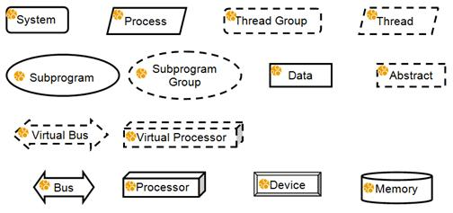
Figure 24 AADL Components Graphical Symbols
(4) These graphical symbols are used to describe a system instance and its components. The same basic symbol is used to represent component types, component implementations, subcomponents, and component instances of a particular category.
Figure 25 Decorators on Threads
(5) Decorators may be attached to graphical symbols. Figure 25 illustrates the decoration of threads with threads properties that are relevant in a timing-related view, i.e., it shows whether threads are periodic, aperiodic, sporadic, timed, hybrid, or background. In the case of periodic, sporadic, timed, and hybrid threads the decorator indicates the period or timeout value.
(6) Introduction of such decorators is permitted for any AADL property or other characteristic of model objects represented by the graphical symbol. For example, a decorator may be used to indicate completeness of timing specification in a component, or to mark a Wi-Fi device. The use of decorators is optional.
Component Classifiers
(7) Figure 26 illustrates the use of the graphical component category symbols to describe the components in terms of their type, implementation, and the content of the implementation. Component types are shown using the basic graphical symbol for the categories. The extension relation of a component type in terms of another component type is shown with a solid line and an hollow triangle arrow head. These symbols are typically used in library views that show the content of AADL specifications or AADL packages, i.e., component classifiers and their extends relationships (see Annex A.2).
(8) In the example of Figure 26, the system type SecureGPSSender extends the system type GPSSender. If a component type that is an extension of another component type is shown graphically, then both the features that are locally declared and the features inherited from the component type being extended may be shown graphically.
(9) The example shows labels for component classifiers and ports. The display of those labels is optional and may be achieved through hovering popup mechanisms. Labels may be placed outside a symbol, inside a symbol, or as labels with a line attachment appropriate with the available display real estate.
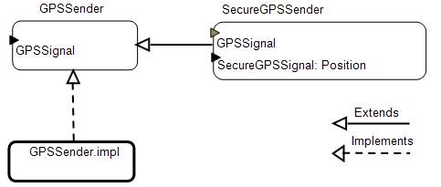
Figure 26 Component Types and Implementations
(10) Figure 26 also shows the representation of component implementations; its graphical symbol is shown using the bold-lined graphical symbol of the category. This bold-lining technique is optional, but recommended if component implementations must be visually distinguished from component types or subcomponents. The relation to the component type is expressed by a dashed line with an hollow triangle arrow head. Component implementation names are shown with a dot (“.”) separated the component type identifier and component implementation identifier.
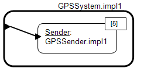
Figure 27 Subcomponents
(11) Subcomponents are shown using the graphical symbol of the component category as illustrated in Figure 27. The subcomponent label shows the subcomponent name, optionally followed by the component classifier after a colon (:). An underline may be used for the name as necessary to visually distinguish the name from the component classifier label. Multiplicities of components and features can be shown as a decorator in the upper right corner of the graphical symbol.
(12) It is permitted to include a text box with additional information regarding the context of the graphical view, such as the name, category, and property values of the AADL model object that is the root of the graphical view. Figure 28 shows the content of a system implementation without the enclosing component symbol and with a text box that contains information relevant to the enclosing component. The dashed rectangle is used to indicate the boundary of the view panel. AADL model elements may have a label. This label consists of the name and optionally the component classifier – separated by a colon (:). Figure 28 illustrates the use of labels for a subcomponent and a port.
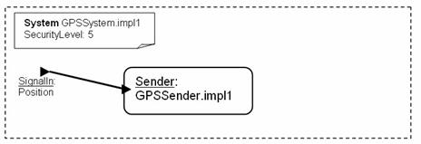
Figure 28 Component Implementation Content with Text Box
(13) Components may be parameterized with prototypes. Figure 29 shows how such prototypes can be illustrated graphically. A paper symbol represents the collection of prototypes and is attached to the right corner. The content of graphical symbol can be the prototype specification or the prototype bindings.
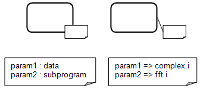
Figure 29 Components and Prototypes
Abstract Features, Ports, and Connections
(14) Figure 30 shows the graphical symbols for abstract features and ports. In this figure, the text represents the graphical symbol legend rather than text label examples in a graphical AADL model. The features are placed anywhere on the perimeter of the component graphical symbol. The orientation of the graphical symbol indicates the direction of the feature.
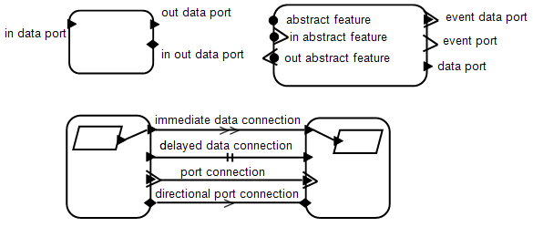
Figure 30 Abstract Features, Ports and Connections
(15) Abstract features are represented by a solid circle, data ports by a solid triangle, event ports by an open angle arrow, and event data ports by a combination of both. The port direction is indicated by the direction of the symbol tip. In the case of an abstract feature an angle arrow is added to indicate the direction. The orientation of the symbol must be adjusted according to the placement on the perimeter. For example, the triangle of an incoming data port must always be oriented such that the tip points into the component graphical symbol.
(16) The abstract feature and port connections are shown as a single solid line. A legal AADL model requires connections to always be connected to ports. In other words, a diagram showing a connection attached to only one port is not acceptable except during the operation of creating or modifying a connection graphically.
(17) Data ports may also have immediate and delayed connections. A single solid line with a double arrow indicates an immediate connection. A delayed connection is marked with a double line crossing the connection line. If the direction of the connection cannot easily be inferred from the feature symbols, then a single arrow may be added to the connection line.
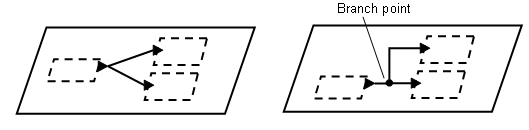
Figure 31 Connections & Branch Points
(18) A connection connects two features. Connections can be made between components that are the same level of the system hierarchy, i.e., subcomponents within the same implementation, or between a component and its enclosing component.
(19) If a port has multiple outgoing or incoming connections, they may either be shown as separate lines or as a single line with lines branching out from it (see Figure 31). The branch points may be marked by a dot to distinguish them from crossing lines.
Feature Groups
(20) Feature groups are represented by a half circle and a solid ball with the ball always facing to the outside of a component symbol. Inside a component, individual ports or feature groups of subcomponents may be connected to the half circle of the feature group as shown in Figure 32. The half circle and solid ball represents a collapsed view of a feature group. Feature group connections are shown as solid line. The direction of a feature group connection may be indicated by an arrow.
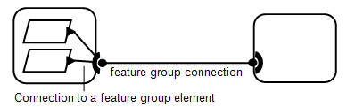
Figure 32 Feature Groups & Connections
(21) Feature group types may be shown by using an expanded symbol for the feature group and by attaching the feature group elements to the enlarged half circle of the feature group symbol (see Figure 33). Alternatively the half circle may be replaced by a vertical bar, which can be expanded to accommodate a larger number of feature group elements. The expanded symbol is useful for graphically representing feature group type declarations and for detailing connections to feature groups (see Figure 34).
Figure 33 Expanded Port Group Type Symbol
(22) Figure 34 shows a set of feature groups in a system hierarchy. Starting from the left, one thread supplies a data port and the other thread furnishes a feature group. This composite feature group is routed from a process via its enclosing system to another system. Within that system the feature group is decomposed into one data port and a feature group (shown using an expanded feature group symbol). That feature group is routed to a process, which decomposes it into its constituents, a data port and an event data port.
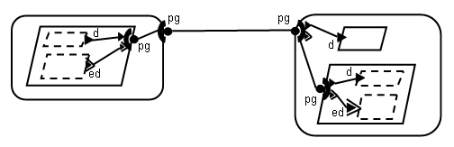
Figure 34 Feature Group Composition and Connections
(23) The expanded feature group symbol can be used to visually distinguish between a connection that passes the whole feature group to a subcomponent and a connection that passes a port group element that itself is a feature group to a subcomponent by connecting the former to the feature group half moon and the latter to the feature group element (see Figure 34).
Shared Access to Data and Buses
(24) In AADL components may require access to other components and provide access to components contained in them. The standard limits such shared access to data components and buses. The same symbol is used to represent access to bus and to data. Figure 35 illustrates the graphical notation to represent sharing of data. Thread1 requires access to a data component and contains a data component Data1, to which it provides access to other components. The provides data access and requires data access features are shown pointing in the direction of the component requiring data access. Data access connections are shown as a single solid line. Both ends of a data access connection must be connected. In our example the required data access of Thread2 is resolved to the data component Data1. Similarly, the required data access of Thread1 is resolved to the data component Data2, which exists at the same system level as Thread1.
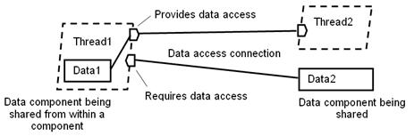
Figure 35 Shared Data Access
(25) Figure 36 illustrates access between processors, memory, and devices through shared access to buses. Memory, devices, processors, and systems can have required bus access. Processors and systems can have provided bus access. Bus access connections are shown as a solid line. Both ends of a data access connection must be connected. Required bus access is resolved to a bus component the same way required data access is resolved to a data component. Also shown in the figure is a provided bus access symbol to indicate that the bus is made accessible outside the system.

Figure 36 Shared Bus Access
Subprogram Calls and Subprogram Access
(26) Figure 37 illustrates the graphical symbols for subprogram call sequences and parameter passing. The sequence of calls is shown by a set of subprogram graphical symbols with the call order indicated by a single solid line with an open arrow head. The graphical display of the call sequence order by use of the solid line with the open arrow head is optional. If not shown, the call sequence can be inferred from the left to right ordering of the subprogram symbol placements.

Figure 37 Subprogram Calls and Parameter Passing
(27) Figure 37 shows a subprogram call sequence with two calls f1 and f2 to the same subprogram filter. Subprogram call labels follow the convention of subcomponent and feature labels discussed earlier. The call sequence ordering is determined by the placement of the subprogram graphical symbols from left to right.
(28) Optionally, the call sequence ordering can be explicitly shown. Subprogram parameters are shown using a solid triangle - the same symbol as used for data ports. A parameter connection is shown as a solid line between two parameters or between a parameter and a data port of a thread containing the subprogram call. The direction of parameter connections must follow the direction of the call sequence.
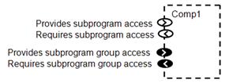
Figure 38 Subprogram Access Features
(29) Figure 38 illustrates the subprogram and subprogram group access feature symbols. The arrow direction indicates whether the feature is provided or required and aligns with the direction of the call. Subprogram access connections and subprogram group access connections use a solid line.
Modes and Mode Transitions
(30) Figure 39 illustrates the graphical representation for modes. Components and connections involved in a mode are shown in the context of the enclosing component implementation. Individual modes are shown as hexagons. The initial mode is shown with a bullet and a transition to the appropriate mode. Mode transitions are shown as simple lined arrows. The events triggering a mode transition can be shown with dashed lines connecting the event port to the mode transition, or by attaching the event name as a transition label (shown in Figure 39).
(31) Tools may show mode membership of connections and subcomponents in the following way. Components and connections involved in a mode, i.e., the modal configuration of a component, are shown in the context of the enclosing component implementation. Mode1 is shown in one color (shown in black in Figure 39) to indicate it as the selected mode. The components, ports, and connections that are part of the selected mode are highlighted in the same color. Other modes and inactive components, ports, and connections are shown in a different color (shown in gray in Figure 39). In other words, the selection of a mode defines a subset view.
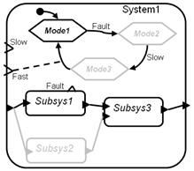
Figure 39 Modes and Mode Transitions
Modeling of Flows
(32) Figure 40 shows the graphical symbols for flow source, flow sink, and flow path specifications and their use in a component type. Flow path symbols are connected to two ports, while flow source and flow sink symbols are connected to one port.
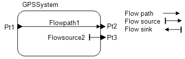
Figure 40 Flow Specifications
(33) Figure 41 illustrates how tools may graphically visualize a flow implementation using the selection technique for mode modeling. A flow implementation can be shown in black by selecting the flow of interest as a flow specification in the text box. Subcomponent flows and connections that are not part of the flow are shown in gray. An editor can use this visualization both for displaying flows and for defining flows. End-to-end flows can be visualized in a similar manner. The text box has a compartment showing end-to-end flow names. Selection of one results in showing the flow in black while graying out the rest.
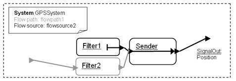
Figure 41 Flow Implementation Selection
Packages, Property Sets, and Annexes
(34) The graphical symbol for packages is a folder with the tab on the left. The graphical symbol for a property set is a folder with the tab on the right. The graphical symbol for annex libraries is a folder with the tab on the left and the annex name embedded in the annex-specific brackets from the textual AADL syntax.
(35) The content of packages may be shown in a nested fashion. Public and private sections of packages may be shown as appropriately labeled compartments. Alternatively, component classifiers in a package may be labeled using the UML convention of a plus (“+”) for public and minus (“-“) for private classifiers.
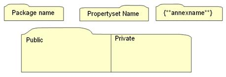
Figure 42 Packages, Property Sets, and Annex Libraries
D.3 Implementation Suggestions
(1) This section suggests ways of graphically showing the system structure and topology. Because of the structure of the underlying formalisms, certain visualizations or views capture information that is particularly useful to the user. The examples given in this section are recommendations not requirements. A graphical toolset may include alternative views.
Package Library View
(2) An AADL model represents a system as a set of component type and implementation declarations. These declarations may be organized into packages and may have extends relationships. This organizational structure can be shown in a library view (see Figure 43). This library view may show the content of a package as component types and component implementations, and the extends and implements relationship (see Figure 26).

Figure 43 A Component Library View
(3) The nesting of package names may be simply reflected in the package name label, or the packages themselves may be shown as a hierarchy based in the name nesting.
System Instance Hierarchy
(4) Actual systems have an instance hierarchy. This system instance hierarchy is implicitly represented in the set of component types and component implementations with one system implementation identified as the root of the system instance. The subcomponents of this root system implementation represent the components making up the system, and the subcomponents contained in the component implementations of these subcomponents recursively identify the nested component instances.
(5) The system instance hierarchy may be shown as a hierarchical tree or as graphical structures. In Figure 44, the system hierarchy is shown in tree form with a solid line with a diamond at the container end showing the containment relationship. In Figure 45, the system hierarchy is shown as a nesting of the graphical symbols to reflect the containment. Both representations are permissible.

Figure 44 Tree-Structured Graphical Instance Hierarchy
Figure 45 Nested Graphical Instance Hierarchy
(6) In many cases navigational tree views for showing hierarchical structures are combined with a second panel showing the content of the selected item in the navigational tree. This allows the full instance hierarchy to be shown in the navigator and the currently selected element in a graphical layout (see Figure 46).
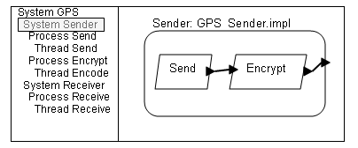
Figure 46 Instance Navigation & Graphical Viewer
Appendix E AADL Meta Model and XML Specification
Normative
This appendix is available as a separate document.
Appendix F Unified Modeling Language (UML) Profile
Normative
The UML2 profile of AADL is defined as a subset profile of MARTE. It is included in the OMG MARTE document.
Appendix G Profiles and Extensions
Informative
(1) Profiling of the AADL standard is supported through project-specific changes to the predeclared AADL_Project property set and through project-specific constraints that are checked by tools.
(2) A project is allowed to add consistency rules to constrain the architecture that can be processed. Such constraints must be documented, including the motivation, rationale, implications. An example constraint is that a subclause, such as subcomponents, must be specified with none to indicate that no elements exist. Another example constraint is that all communication between processes must be through port connections. An AADL model that is constrained through such consistency rules is still considered to be a legal AADL model.
(3) The reasons for such constraints are to restrict the system to be modeled, e.g., High integrity systems, or specific architectures such as ARINC653, or to reflect inability to provide support for all possible execution semantics in the runtime system.
(4) A profile may also include extensions to AADL, such as additional properties that are defined in a property set. For example, support for the ARINC 653 architecture may include partition-specific properties and health monitoring specific properties.
(5) Profiles can be turned into a standardized set of guidelines, for example, the effort to define guidelines for modeling ARINC653 architectures in AADL.
(6) A minimal AADL core subset is defined to support the following restrictions:
(7) No modes, no user defined property sets, no runtime protection of virtual address spaces, single processor, no virtual processor, no virtual bus, queue depth 1, no remote subprogram calls, no sporadic, background, hybrid, timed threads.
Annex Document A Code Generation
This annex document is available as a separate document.
Annex Document B Data Modeling
This annex document is available as a separate document.
Normative
This annex document is available as a separate document.
Annex Document D Behavior Model
Normative
This annex document is available as a separate document.
Normative
This annex document will contain small sublanguage annex extensions. Candidates are: Data set support; Equivalence and Signature Matching rules, Configuration constraint support; Mode transition and dispatch trigger condition support.
(1) This annex is to provide support for defining sets of property associations and allowing them to be associated with a model. A data set is a named collection of contained property associations that all have a common root for their applies to paths. Such named data sets can be defined as elements of a DataSet annex library and can be referenced in DataSet annex subclauses.
(2) The purpose of this annex is to provide the ability to annotate elements of an AADL model with data that is expressed as property associations. For example, we can define a dataset that represents estimated execution time of threads and subprograms, a second dataset that represents benchmark execution time of threads and subprogram, and a third dataset that represents measured execution time of actual code. Different sets of information can be kept in separate datasets, e.g., security related information may be kept separate from timing information. Different datasets can be associated with the same model, e.g., various combinations of timing-related datasets and security-related datasets can be associated with the system implementation that represents the root of a system.
NOTE: Model-related data may already exist in a user-defined format. In that case the data does not have to be converted into an AADL property association representation. Instead the modeler can associate the name of a file that contains such data through a user-defined property.
Syntax
dataset_annex_library ::=
defining_dataset_identifier applies to unique_component_implementation_reference
properties
{ contained_property_association }+
end dataset_identifier ;
dataset_annex_subclause ::=
with unique_dataset_reference { , unique_dataset_reference }* ;
unique_dataset_reference ::= unique_package_name :: dataset_identifier
NOTE: The Unique_component_implementation_reference and contained_property_association syntax rules are those defined in the AADL core language standard.
Naming Rules
(N1) The defining identifier of a dataset must be unique within the same annex library declaration. In other words, an AADL package can contain only one data set annex library and each dataset annex library has its own name space.
(N2) The dataset reference must name a dataset that is defined in a dataset annex library. The dataset annex library is uniquely identified by the AADL package it is contained in.
(N3) The root of the applies to path of the contained property associations is the component implementation referenced in the applies to statement of the dataset definition.
Legality Rules
(L1) The dataset annex subclause must be declared as one of the annex subclauses of a component implementation extension of the component implementation identified as the root in the applies to of the dataset.